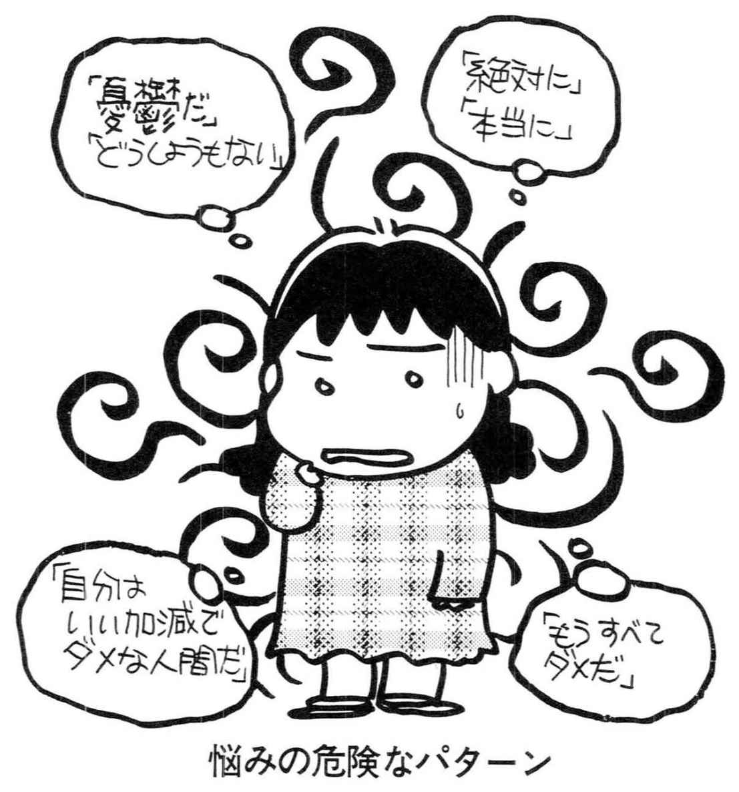
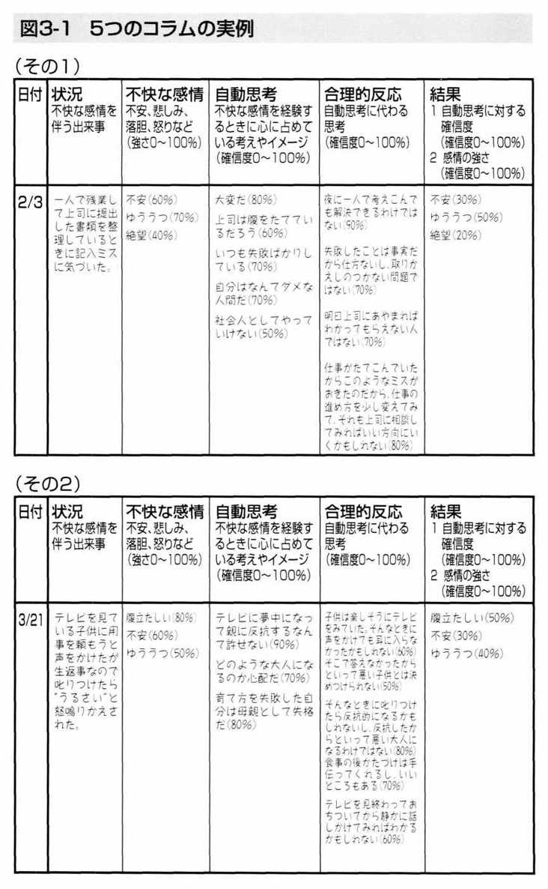

| 「うつ」を治す (PHP新書) | |
| 大野 裕 | |
| PHP研究所 (2000) | |

「うつ」を治す
大野裕
「うつ」を治す 目次
うつ病というのは、気分が沈み込んで何かをする気力がなくなったり、まわりのことに興味がもてなくなって人生が味気なく感じられるようになったりして、日常生活に支障がでてくるようになった状態です。
本書は、うつ病と診断された人はもちろん、軽い気分の落ち込みのために毎日の生活に張りをなくしそうになっている人にも役に立つように書かれています。
うつ病はまれな病気ではありませんし、気分の落ち込みは私たちが日常的に体験しているものです。うつ病は風邪のようなものだとよく言われますが、日常的に体験する心の病気だという意味ではたしかに風邪にたとえることができます。
アメリカ精神医学会が一九九四年に発表して、現在世界的に使われている精神疾患の診断分類について解説した『ＤＳＭ― 精神疾患の診断・統計マニュアル』（医学書院）には、ある時点で地域社会を調査したときに大うつ病と呼ばれる中核的なうつ病にかかっている人の割合は、女性の方が高くて五％から九％、男性で二％から三％だと書かれています。
精神疾患の診断・統計マニュアル』（医学書院）には、ある時点で地域社会を調査したときに大うつ病と呼ばれる中核的なうつ病にかかっている人の割合は、女性の方が高くて五％から九％、男性で二％から三％だと書かれています。
しかも、この中核的なうつ病に一生のうち一度はかかる割合は、女性で一〇％から二五％、男性で五％から一二％と、ひじょうに高くなっています。つまり、女性の五人から一〇人に一人、男性の一〇人から二〇人に一人はうつ病にかかるということになります。一般に発症しやすい年齢は二十五歳から三十五歳ですが、何歳でも起こる可能性があります。
ちなみに、ある時点を区切ったとき、気分変調性障害と呼ばれる軽度の慢性うつ病にかかっている人は人口の三％、さまざまなタイプのうつ病全体をあわせると一〇％から二〇％の人がかかっているという、とても高い結果も報告されています。
このように、ひじょうに多くの人がかかるという点だけでなく、何度もかかることがあるという点でも、うつ病は風邪に似ています。ただし、うつ病は、きちんと治療しないと、何度も繰り返す可能性が高くなります。このことは、当然のことですが、うつ病が風邪とはまた違った側面を持っているということを意味しています。
精神医学的障害に対する差別や偏見をなくし、患者さんやその家族が、前向きな気持ちで病気に向き合うという意味で、「うつ病は風邪のようなもの」という考え方は大切なものです。
しかし、うつ病を風邪のようなものだと言って軽く見てしまうことはとても危険なことでもあります。第一に、うつ病はひじょうに強い苦痛を伴う病気です。うつ病になった人たちは、うつ病にはほかの人に伝えきれない苦しさがあるということを、しばしば訴えます。当然のことながら、それを見ているまわりの人たちも心を痛めます。
それだけではなく、うつ病は慢性化しやすい病気だという点でも風邪とは違っています。しかも、日常的な機能がひどく障害されて、仕事や家事、学業などに深刻な影響がでてきます。このことは、うつ病の人自身やまわりの人たちだけでなく、社会全体で取り組み解決していかなくてはならない重要な問題だということを意味しています。
うつ病は死につながる危険性のある病気でもあります。後で詳しく述べますが、うつ病では自殺の危険性が高まりますし、心筋梗塞などの一般身体疾患にかかりやすくなったり、その予後が悪化したりする可能性もあります。高齢者の場合、うつ病にかかると、死亡率が一・八倍になるという報告もあります。
また、うつ病は、誰でもかかる可能性があるという点ではたしかに風邪にたとえることはできますが、風邪のようにゆっくり休むだけでは解決しません。軽いように見えても積極的な治療が必要です。しかしウィルス性疾患で治療法が確立していない風邪とは違って、うつ病には、広く効果が認められた治療法があるのです。
自殺は、最近の大きな社会問題です。一九九八年一年間では、自殺で亡くなる方が、初めて三万人の大台を超えました。これは交通事故による死亡者の三倍以上にあたります。
自殺の背景には程度の差はあるものの、うつ病が存在していることが多いと考えられます。新聞やテレビなどの報道では、自殺のきっかけとして経済苦や病苦などが挙げられています。たしかにそれらは一つのきっかけにはなりますが、精神医学的には、経済苦や病苦をきっかけに抑うつ感が強まり、自ら命を絶とうと思い込むまでになったと考えるのが自然です。
精神医学の専門用語に、心理的剖検（サイコロジカル・オートプシー）という言葉があります。これは、亡くなった人が死ぬ前にどのような精神状態にあったかをさかのぼって調べる研究方法です。そこからは、自殺者の九割以上に精神医学的障害が認められたという結果が得られています。なかでも、中高年者の場合には、うつ病と考えられるケースが明らかに多かったといわれます。
アメリカの研究では、うつ病や双極性障害（いわゆる躁うつ病）などの気分障害の患者さんの二〇％から四〇％の人が自分を傷つけるような行為をしているといわれていますし、重症のうつ病のために入院した患者さんの一五％が自殺を試みているとされています。
一九九七年十二月四日付の新聞の朝刊に、過度な仕事に起因すると考えられるうつ病で自殺した二十八歳（当時）のビジネスマンが労災の認定を受けたという記事が掲載されました。このとき、マスコミは自殺が労災認定されたというセンセーショナルな現象に注目して報道しましたが、この出来事は自殺というよりもうつ病が労災として認定されたことに意義がありました。自殺はうつ病の症状のひとつですから、そのビジネスマンの場合は、仕事の負荷が原因でうつ病にかかったにもかかわらず適切な措置がとられなかったために、最終的に自殺をすることになったと判断されたのです。これは、遺族の申請からは五年八カ月、彼の自殺からは九年もたってからのことでした。
二〇〇〇年三月には、やはり仕事の負荷が原因でうつ病にかかり自殺した社員の家族が勤務先の会社を相手に損害賠償を求めた訴訟の上告審で、最高裁としては初めて、過労自殺をめぐる企業の責任を認める判決を下しました。一、二審判決においても、過労とうつ病による自殺との間の因果関係が認められていましたが、今回の判決では、本人の性格や両親の対応にも問題があったとして損害額を減額した二審判決が破棄差し戻しとされました。
このように、うつ病は、患者さん本人にとっては、死んでしまいたいと考えるほどにつらい病気なのです。
しかも、うつ病にかかった人は心の中で苦しむだけでなく、日常生活にも支障が出てきます。ある企業で行われた研究では、抑うつ気分が強くなればそれだけ職場を休むことが多くなりますし、職場に出ても仕事への集中力が落ちてくるという結果が得られています。そのために、うつ病の人は自分を責めるようになり、ますます気分が沈み込むことになります。
これは、社会的に見ても大きな問題です。機能的な障害の原因になりうる疾患についてハーバード大学と世界保健機関（ＷＨＯ）の研究グループが一九九〇年に報告書を出していますが、そのなかでトップに位置づけられたのがうつ病（単極性うつ病）でした。上位一〇疾患には鉄欠乏性貧血や慢性閉塞性呼吸器疾患などの一般身体疾患、双極性障害や精神分裂病などの精神疾患、転落などの事故などが含まれていますが、うつ病は、それら以上に生活上の機能を障害する疾患として位置づけられているのです。この報告からも、うつ病をはじめとする精神医学的障害に対する社会的なとりくみの必要性を読みとることができます。
しかも、うつ病に苦しむ人は世界的に見ても着実に増え続けています。コロンビア大学のワイスマン教授が行った世界規模の調査を見れば、世界的な規模でうつ病が増加しているということがわかります。
ワイスマン教授を中心とする研究グループは、一九七〇年代半ばから一九八〇年代後半にかけて、北米、プエルトリコ、西ヨーロッパ、中東、アジア、環太平洋地域で、三万九〇〇〇人の地域住民に対する疫学調査と四〇〇〇人を対象とする家族調査を行いました。その結果、すべての国でうつ病にかかっている人が増えていること、うつ病は各国の歴史や社会情勢、経済状況といった社会文化的な要因の影響を受けて発症すること、さらには現代社会がそれだけストレスの多い社会だということがわかったのです。
わが国では、こうした地域調査がほとんど行われていないために実態がよくわかっていないのですが、うつ病の患者さんはあきらかに増加傾向にあると思われます。厚生省の統計によれば、うつ病などの気分の障害があると医療機関で診断された人の数は一九八四年に一〇万人弱だったのが、一九九四年に二〇万人強になり、一九九八年には四三万人と急増しています。
もちろん受診者数が増えたからといってうつ病が増えたとすぐに結論づけることはできません。うつ病に対する一般の人たちの理解が深まって、精神科などを比較的気楽に受診するようになったという社会状況の変化も考えられます。
しかし、社会のストレスが強まっていることや、世界的にうつ病が増えていることを考えると、やはり日本でもうつ病自体が増えてきていると考えるのが自然です。さらにこのことからは、うつ病とまで診断しきれない軽い気分の落ち込みを体験している人はもっと増えているということが推測されます。
第１章でも説明しますが、うつ病は自分で認識することがむずかしいし、まわりで見ていてもわかりにくい病気です。ですから受診率が低く、病気にかかっていても病院に行かない人が多いので注意しなくてはなりません。
ヨーロッパで八万人近くの一般住民の人を対象に、うつ病の人がどの程度、どのような治療を受けているかについて調べる研究が行われました。これはデプレス（Depression Research in European Society）と呼ばれる有名な研究です。その結果が一九九七年に発表されたのですが、それによれば、うつ病と診断された人のうち四三％の人は医療機関を受診していませんでした。
その理由はいくつか考えられます。精神的な問題で医療機関を受診することに抵抗感があったのかもしれません。あるいは、本人自身がうつ病だということに気づいていなくて、一人で苦しんでいたのかもしれません。
このヨーロッパの調査でもう一つわかったことがあります。医療機関を受診しても適切な治療が受けられるわけではないということです。この研究では、うつ病のために受診した人の三一％しか薬を投与されていませんでした。そのなかで、うつ病の治療薬の抗うつ薬を投与された人は二五％、つまり四分の一でしかありませんでした。このようにうつ病は、苦しんでいる当人だけでなく、医療機関の医師にも気づかれにくい病気であるのです。
しかしうつ病は早くに見つけて適切な治療をすれば、他の精神医学的障害に比べてもかなり良くなる病気です。ですから、国際的にも、医療機関でうつ病を見つけて治療をすることの重要性が認識され、さまざまな教育プログラムが開発されつつあります。
たとえばアメリカでは、何年も前から、うつ病の治療の必要性と有用性について社会的なキャンペーンが繰り返されて、成果をあげています。
つい先頃も、うつ病を体験したことがあるとカミングアウトしたゴア副大統領夫人らが中心になって、うつ病に社会的にとりくもうという集会が開かれました。そこにはクリントン大統領も出席して、それが『ニューヨークタイムズ』など多くのメディアを通して報じられたという話を聞きました。こうした社会への情報の伝達は、精神面の健康を維持するためには不可欠です。
日本人には、精神医学的な障害に対する社会的なとりくみが苦手な面があるようです。不安を刺激されることを恐れ、つい現実から目を背けてしまうからでしょうか。しかし、そうであればこそ、こうした問題に積極的に目を向けていく必要があります。
このような流れの中で、私たちは厚生省の研究の一環として、ある地域で、うつ病の人に対する精神医学的な援助を行って地域住民の精神的健康度を高める試みを始めました。そこでも、個人への援助に加えて、地域への啓蒙的な援助プログラムを組み込む予定でいます。
気分が落ち込んだときに、私たちはそれがその人の精神力の問題のように考えてしまうところがあります。まわりの人だけでなく、うつ病の人本人も「気持ちがたるんでいるから気分が沈み込むのだ」「精神的に弱いからうつ病になったのだ」と、つい考えてしまうのです。
しかし、そうではありません。抑うつ気分はその人個人の精神力ではどうすることもできないことが多いのです。
『ワシントンポスト』の記者のトレーシー・トンプソンが書いた『うつ病と闘ったある少女の物語』（大野裕監修・藤井留美訳、大和書房）といううつ病の体験記があります。この本の原題は「ザ・ビースト」と言います。ビーストというのは日本語では獣という意味で、彼女は十六歳のときに初めてうつ病にかかったときそれがうつ病とはわからず、獣に襲われたようなすごく怖い体験をしたためにそのようなタイトルをつけたと言います。
その本の中で彼女は次のように書いています。
もし自分がこうだったらと想像してみて。
自分の認識がゆがんでいくんだけど、
いつそうなるか予測がつかないの。
おまけに、どの認識がおかしくて、
どれが現実なのか区別もつかない。
押しよせてくる気分に抵抗することもできず、
何かを説明するのにもゆがみきった
最悪の認識のほかに頼るものがない。
そんな状態で毎日を過ごさなくてはならないの。
これを読むと、うつ病が自分の力ではコントロールできないほどの勢いを持っていることがわかります。彼女は、何度もうつ病を繰り返すのですが、それがいつ起こるのかまったく予想できず、突然自分の認識が歪んできます。そうすると、何が現実で何が自分の空想なのかわからなくなって自分ではどうすることもできなくなるのです。
このように自分の力ではどうすることもできないことまで気の持ち方だと言われてしまうと、うつ病の人はつらくなってしまいます。後でも説明しますが、うつ病の気持ちの落ち込みと普通の気持ちの落ち込みとは連続線上にあって、はっきり区別することはできません。しかし、それはけっして、日常生活で私たちがやっているように、気の持ち方を変えるだけでうつ病の気分の落ち込みを変えることができるということを意味してはいません。また、ちょっとした軽い落ち込みのように見えるときでも、自分の気の持ち方だけではそれを変えられないこともあるのです。
ですから、気持ちが沈み込んできたり全体的な気力がなくなってきたと感じるときには、軽いうつだから自分で何とかできると決めつけたり、何とかしなくてはならないと思い込んだりしないで、気軽に、しかし納得のいく形で専門家に相談することが大切です。
うつ病を治すためには、薬物療法のような生物学的な治療と、カウンセリングのような心理的治療、そして環境調整のような社会的治療を組み合わせて行うことが必要になります。
うつ病は、きちんと治療をしていてもなかなか改善しないことがよくあります。そのためについしびれを切らして、複数の医療機関を転々としてしまう人がいます。しかし、それは良いことではありません。うつ病は慢性的に経過する可能性があります。ですから、それまでの病状や治療の経過を知っている主治医を持つことが大事なのです。
うつ病は、一般的には、精神科や神経科、心療内科などで治療をします。相性の問題もあるので、すぐに信頼できる医師に出会えないことがあります。そうした場合には、何人かの医師の診察を受けてみて自分にあった医師を見つけるようにします。内科などにもうつ病を理解している医師は増えてきていますので、かかりつけの医師から治療を受けたり、その医師に専門家を紹介してもらったりするのも一つの方法です。
主治医を決めた後でも、ほかの医師を訪れて現在の治療法があっているかどうか、いわゆるセカンドオピニオンを尋ねてみてもいいでしょう。しかし、次々と主治医を変えるのは逆効果です。うつ病にかぎらず、精神医学的障害においては、一人の信頼できる主治医に相談を続けることがとても大切です。
本書の前半にはうつ病とはどのようなものかが、後半にはうつ病の治療にはどのようなものがあるかが書かれています。
うつ病がどのようなものかを知りたいという人は前半から読んでいってください。しかし、いまうつに苦しんでいて手助けを必要としている人は、後半から読み始めてください。そして、余裕があれば前半にも目を通してください。
うつ病になりやすい人は几帳面できまじめな人が多いと言われていますので、こうした本を読むときにもきちんと最初から読む人が少なくないと思います。しかし、それでは疲れてしまいます。読んでいくうちに読み進む気力がなくなってくるかもしれません。目次にざっと目を通して自分に役に立ちそうなところから読むなど、自分なりに読み方を工夫してみてください。後でも述べますように、そのように柔軟に課題にとりくむことも、うつを治すためのよいトレーニングになります。
後半の心理的治療の部分では、必ずしもうつ病の人だけではなく、日常生活に疲れた人やイヤなことがあって少し気分がめいっている人にも役に立つような気の持ち方を書いてみました。そうしたときに読んでいただければ、なにか新しい考え方のヒントが得られるはずです。
また、本書の最後では、うつ病の人と一緒に生活している家族や友だち、会社の人などが、どのようにうつ病とつきあえばよいかについて書いてみました。外来では、患者さんからだけではなく、うつ病の人を心配しながら、しかしどうしてよいかわからず困っているまわりの方々からも、相談を受けることが多いからです。
最後になりますが、本書のイラストを快く引き受けていただいた藤臣柊子氏に心から感謝いたします。藤臣氏は、ベストセラーになった『みんな元気に病んでいる』（サンマーク出版）の著者で、「脳みそ系」は珍しくないんだとご自分がうつ病であることをカミングアウトされています。そうした藤臣氏が「心がしんどい普通の人々」に贈り続けているメッセージにはいつも温かく深く厳しいものがありますが、その藤臣氏にイラストを描いていただけることになってこれほど嬉しいことはありません。
藤臣氏にお願いしようというアイデアを出したのは編集者の小木田順子氏です。本書のタイトルも小木田氏のアイデアです。うつは治療可能だという点では病気だが、だからといって病気と言いきれない面もあるし、治すためにはたしかに専門家による治療が大事だが、自分で治していく患者さんの力も無視できないし、患者さんや家族と医療関係者との共同作業も重要だし、と私がぶつぶつ言っているのをそばで聞いて、『「うつ」を治す』はどうだろうと言ったのです。そのタイトルに頭の中のもやもやがすっと吸い込まれていくように感じた私は、一も二もなく賛成していました。
このほかにも、いろいろな人たちの影響を私は受けています。患者さんやご家族、先輩や仲間に教わったこともたくさんこの本のなかに入れさせていただきました。
そして、この本ができあがりました。
この章ではまず、うつ病はどのような病気なのかということを、説明していくことにしましょう。「うつ」の患者さんに対しては、うつ病、うつ状態、抑うつ状態といったさまざまな言い方がされます。そのために、「うつ病」と「うつ状態」と何が違うんだろうと疑問に思う人が少なくありません。
「うつ状態」と「抑うつ状態」というのは同じ意味で使われます。気持ちが沈み込んだ状態を表現する言葉です。ですから、うつ病の患者さんでなくても、気分が沈み込んでいれば「うつ状態」という言葉が使われます。自分の世界に入り込んでしまって現実とうまく関われなくなる精神分裂病にかかっている人が、自分の病気に対して悲観的になって気持ちが落ち込むようなことがあれば、精神分裂病の「うつ状態」というふうに表現しますし、不安のために日常的な生活に支障をきたすような不安障害の人が、自信をなくしてふさぎ込んでいれば不安障害の「うつ状態」と表現します。
そうした精神的な問題を感じていない人が日常的な出来事のために落ち込んでいる場合にも、またうつ病の症状として抑うつ感を体験している場合にも、「うつ状態」という言葉は使われます。つまり、「うつ状態」というのはうつ病よりも広い概念なのです。
一方、うつ病は、「うつ状態」が症状の中心になっている場合に使われる用語です。その細かい定義についてはあとで詳しく説明しますが、「抑うつ気分」や「興味や楽しみの喪失」のためにひじょうに苦しい思いをしたり、生活に支障が生じたりした場合にうつ「病」という表現が使われるのです。
最近の研究では、日常的な軽い落ち込みと、うつ病と呼ばれるほどの深刻な落ち込みとをはっきり区別することはできないと考えられるようになっています。これは双生児研究の第一人者であるロバート・プロミンによる研究で、双生児を対象にした遺伝研究において、軽い落ち込みからうつ病と言われる状態までの症状の強さは連続的に変化していて、いわゆる「正常」と「異常」をはっきりとわけることはできなかったと言います。うつ状態は薬で改善させることができる脳機能の変調という意味では病気なのですが、生活に支障が出てきているかどうかでうつ「病」かどうかが決まるという意味では病気とも言い切れません。
このことは、うつについて、血圧や熱のように問題のない状態から連続線上で考えていって、あるところまで来れば医学的な介入が必要な状態になるものと考えるのが妥当だということを意味しています。これは、従来のうつ病の診断を根本から問い直す知見です。
こうしたことから、この本のタイトルを『「うつ病」を治す』ではなく、『「うつ」を治す』としました。うつ病の治療は、気持ちが沈み込んではいても、うつ「病」と呼ばれるほどには支障がでていない多くの人にも役に立つからです。
なお、うつ病の精神医学的な診断や分類については第２章で詳しく説明することにします。
うつ病に苦しんでいる本人や医療機関の関係者にうつ病が気づかれにくいのはなぜでしょうか。それにはいくつかの理由が考えられます。
まず、うつになりやすい人には非常に真面目で几帳面な人が多く、精神的な悩みを病気ではなく自分の問題として考える傾向があります。自分が弱いから悩んでいるのだと考えて自分を責めて、専門家の手助けを受けようとしないのです。また、苦しんでいることを表に出さないようにしようとしますから、まわりの人にも苦しさがわかりません。一見したところ普通に見えるのです。一般には、精神的な悩みや問題を抱えている人は、それが行動や態度に現れるはずだという思い込みがありますが、けっしてそうではないので注意しなくてはなりません。
また、うつ状態の症状のところでも述べますが、身体症状の陰に隠れてうつ症状が見えにくくなることがあります。とくにうつ病は身体の症状がでやすく、そちらの方に関心が向いて、身体症状の裏にある精神的な悩みに気づかれにくいという傾向もあります。
もう一つの問題として、うつ病のためにその人の行動に変化がでてきて、それに目を奪われてしまい、その裏に隠れている憂うつな気持ちにまわりの人が気づかないことがあります。
私自身も外来診療でうつ病の治療をしていくうちに患者さんの人柄が変わったように感じるという体験をすることがよくあります。外来で最初に会ったときには弱々しくて頼りなさそうに見えた人が、治療が進むうちにはっきりと自分の意見を言えるようになりますし、いつもイライラして怒りっぽかった人が、うつ病が改善すると穏やかで物静かな人に変わります。
そのときに、よく話を聞いてみると、人が変わったわけではなくて元々の性格に戻っただけだということがわかります。うつや不安のために人が変わったようになっていただけなのです。イライラして怒りっぽかった患者さんの場合、人間関係に極端に敏感になったり行動のエネルギーがなくなったりするので、いつもとは違う自分にいらだって、ほかの人にもあたるようになっていたのです。子どもの場合には同じことがもっと起こりやすいので注意しなくてはなりません。
このようにうつ病は自覚しにくいし、まわりで見ていてもわかりにくい病気です。しかし、治療すれば良くなる病気ですので、早めに見つけて治療することが大切になります。早くに見つけるために注意すべき大事な点は、日常生活において、いつもと違う状態が続くことに気づくことです。
巻末にアメリカの精神科医アーロン・ベックがうつの程度を判定するために考案した質問票の「ベックうつ病尺度」を載せました。また「まわりの人からわかるチェックポイント」を表にまとめましたので参考にしてください。
抑うつ症状のなかでも食欲と睡眠は重要です。食欲と睡眠は、人が生きていくためにどうしても必要な欲求です。眠れなくなったり食欲がなくなったりするとき、もしくは逆に眠り過ぎたり食べ過ぎたりするときのように、人間としての基本的な欲求に障害がでてきているときには注意が必要です。私は、こうした状態が一週間続いたときには専門家に相談することを勧めています。
食欲や睡眠のほかにも、仕事の能率が落ちてきたり趣味などに関心が持てなくなったりしたときには気をつけなくてはなりません。
こうした状態に早く気づけるようにという目的でつけられた症状の呼び名がいろいろありますが、ここでは夏目誠氏がまとめたものを参考にしていくつか説明することにします。
そのひとつが「朝刊症候群」です。笠原嘉氏が名づけたもので、ビジネスマンが朝何となく新聞を読む気がしなくなった状態を指しています。ビジネスマンに限らず、私たちは普通、朝起きたら新聞に目を通します。しかし、うつになるとそのリズムが崩れて朝刊を読む気がしなくなりますし、一応目を通しても内容が頭に入ってこなくなります。うつ病のときには朝方に調子が悪いことが多いために、こうしたことが起こりやすくなるのです。
また、うつ病の人はとくに朝早く目が覚めてしまい、そのあとうつうつとした気分が続くことがよくあります。このように朝早く目が覚める状態は、「午前三時症候群」と呼ばれたりします。これは午前三時でも四時でもよいのですが、とにかくうつ病の人は朝早く目が覚めてしまう傾向があります。しかもそのときにすっきり目が覚めるわけではなくて、気分も体も重く、布団からでることもできずに、暗闇のなかでうつうつと考え込んで身悶えしているということがよくあります。
仕事がストレスになっていて日曜日の夕方になると元気がなくなる状態を「サザエさん症候群」と呼ぶ人がいます。これは「ちびまる子ちゃん症候群」と呼んでもよいでしょう。休みに入ったばかりの土曜日は元気なのですが、日曜日の昼頃になると仕事のことが頭に浮かぶようになり、『サザエさん』や『ちびまる子ちゃん』が放送される夕方頃になると、すっかり元気がなくなってくるのです。
同様に仕事が負担になっているときに、会社の前までは行くのですが、なかに入ることができない状態を「Ｕターン症候群」といったりします。会社が近づいてくると胸がドキドキして、頭が真っ白になって、もう一歩が踏み出せなくて帰ってしまうのです。それだけつらいのに、そのつらさをなかなか妻に言えないで家に帰るに帰れず、会社のまわりをブラブラしたり、デパートに行ったり、図書館に行ったり、公園でボーッとしていたりして、夕方になってから家に帰るということを繰り返すビジネスマンもいます。
うつ病でつらくなると、私たちはつい原因探しをしたくなります。何が原因でこんなにつらい気持ちになったのかを考えるのです。ときには子ども時代にまでさかのぼって原因を探し続けます。たしかに問題を探し出して解決していくことは大切ですが、あまり遠い過去までさかのぼっても意味はありません。
そもそも気持ちが落ち込んでいるときには、つらかったことばかり思い出されて、良かったことを思い出すことはあまりありません。しかも原因と思われることをどんなにたくさん思い出しても、さかのぼって解決することはできません。結局は後悔や恨みの気持ちばかりが強くなって、ますますつらくなるだけです。
原因が思い当たらないこともあります。人によっては思い当たる原因がないからうつ病ではないと考える人もいるのですが、必ずしもそうではありません。最初にうつ病にかかるときにはきっかけがあることが多いのですが、その後はきっかけがなくてもうつ病が起こることが多くなるのです。
うつ病になりやすい性格を変えたいと考える人もいます。うつ病は、几帳面で神経質、こだわりが強くて真面目な人がかかりやすいと言われています。こうした性格をドイツの精神科医のテレンバッハはメランコリー親和型性格と呼び、その特徴として、職場では責任感が強く、几帳面で勤勉で、対人関係においては、誠実で権威や序列を尊重し、道徳心が高い傾向をあげています。また、同じく日本の精神科医の下田光造は五十年以上前に、凝り性で几帳面で責任感が強い性格を執着性格と呼び、双極性障害（躁うつ病）にかかりやすいと指摘しています。
たしかにこうした性格を持った人はうつ病になりやすい傾向がありますが、後にも述べますように、うつ病になるということは環境の変化に対する適応的な反応でもあるのです。しかも、拙著『弱体化する生物、日本人』（講談社）でも書いたように、性格は遺伝で決まっている部分が少なくありませんし、環境の影響を受けて形作られた部分でもそう簡単に変えることはできません。
また、最近の研究では、性格そのものではなく性格と環境との相互作用でうつ病のなりやすさが決まるということもわかってきています。
例えば、どんどん新しいことに挑戦していく達成型の人は、自分が熱心に取り組んでいた仕事がうまくいかなくなると落ち込みます。一方、仕事そのものよりも人づきあいを大切にする人間関係型の人は、仕事がうまくいかなくてもそれほど強いストレスを感じないのですが、人間関係がうまくいかなくなると気分が沈み込んできます。このように、性格によって感じるストレスが違うのです。
ですから、自分の性格を大切にしながら、現実に自分が直面している問題をていねいに解決していくことが、うつを治す上では大切になってきます。そのときの、キーワードが、認知（Cognition）、コントロール感覚（Control）、コミュニケーション（Communication）の〝三つのＣ〟ですが、これについては、第３章で詳しく説明することにします。
いわゆる精神医学的障害の分類は現在、原因に基づいてではなく、表面に現れた症状の特徴に基づいて行われています。極端なことを言えば、インフルエンザや肺炎、膀胱炎といった感染症で発熱しているときに、原因菌ではなく、発熱という症状によって「発熱」グループとして分類したり、関節の痛みがあるときにその原因とは関係なく関節の「痛み」グループとして分類したりするようなものです。うつ病も、「病」という文字がついているためにひとつの病気のように考えられがちですが、実際はうつという心の「痛み」のために苦しんでいる状態をまとめたものと考えた方がわかりやすいでしょう。その意味では、いわゆる医学モデルの病気とは若干ニュアンスが違うと、私は考えています。ちなみに、うつ病は英語ではdepressionまたはdepressive disorderと呼ばれるのが一般的で「病気」を意味するillnessやdiseaseという単語がつけられることはあまりありません。
しかし、だからといって精神医学的障害発症のメカニズムがまったくわかっていないというわけではありません。脳科学の発達に伴って、その脳内メカニズムがずいぶん解明されてきました。たとえば、うつ状態のときには、脳内の神経と神経を結ぶセロトニンやノルアドレナリン（ノルエピネフリン）などの脳内神経伝達物質が減少しているということがわかっています。このように脳神経系の機能に変調を来しているという意味では、うつを、他の身体疾患と同じ病気と考えることができます。
私たちの脳の中には一〇〇〇億個の脳神経があります。これらの神経はまわりに樹状突起と呼ばれる細く長く突き出した手足のような部分がいくつもあり、その樹状突起を介して他の多くの神経と連結してネットワークを形成しています。
私たちの感情や思考は、こうしたネットワークを形成している脳の中の神経の働きによって生まれます。そのネットワークを通して情報が伝達されるとき、それぞれの神経の中の神経繊維に電気の信号が伝わります。そして、シナプス終末と呼ばれる神経の末端にまで情報が伝わると、シナプス小胞と呼ばれる脳内化学物質が詰まった多くの球体から神経伝達物質と呼ばれる化学物質が、神経と神経との間のシナプス間隙に放出されます。
つまり、神経と神経の連結部分は二つの神経が直接接触しているわけではなく、シナプス間隙と呼ばれるすきまがあって、神経伝達物質がその間に信号を伝えているのです。シナプス終末から放出された神経伝達物質は次の神経の表面にある多数の受容体と結合して、その神経細胞を興奮させ、情報が伝達されていくことになります。
こうした神経伝達物質としては、ドーパミン、セロトニン、ノルアドレナリン（ノルエピネフリン）といったいくつもの化学物質が発見されていますが、これらがすべての神経で同じように放出されるのではなく、神経の系列ごとに特定の脳内物質が働いているのです。つまり、ある神経の系列ではドーパミンが、また別の系列ではセロトニンが中心になって神経と神経をつなぐ役割を果たしています。抑うつ状態のときにはセロトニンとノルアドレナリン（ノルエピネフリン）という脳内物質が関係している神経の系列に変調が起きていて、シナプス間隙のセロトニンやノルアドレナリン（ノルエピネフリン）が減少しています。しかし、その原因についてはよくわかっていません（シナプス間隙で神経伝達物質が減少している状態については第４章の図４―２を参考にしてください）。
うつ病の原因に関するものとしては、以前から心因性ないしは神経症性うつ病と内因性うつ病という分類が使われてきました。心因性うつ病というのは、何らかのストレスがきっかけになって発症したうつ病です。内因性うつ病というのは、そうしたきっかけなしに純粋に脳内の生物学的な原因で起きたうつ病という意味です。こうした原因に基づく分類はいかにもすっきりとしているように見えますが、それほどきれいに分類できるわけではないということは脳科学的なうつ病のメカニズムからもわかります。
たしかに、強いストレスはうつ病にかかるきっかけにはなります。心因性のうつ病でも内因性のうつ病でも、ほとんどの人が発症前にストレスを体験しています。患者さんによっては、はっきりしたきっかけがあるから「心因性」のうつで、抗うつ薬を飲む必要がないのではないかと尋ねる人がいますが、けっしてそうではないのです。きっかけがあるかどうかにかかわらず、気持ちが沈み込んでいるときには脳内の神経伝達物質が変化しているのですから、抗うつ薬を使ってバランスを取り戻すことが役に立ちます。
アキスカルというアメリカの有名なうつ病の研究者は、神経症性うつ病として診断された患者さん一〇〇名を三年間から四年間、追跡調査しました。これは、一九八七年に発表された論文の中に出ているデータですが、わずか三、四年たっただけで、三分の一以上の三六名の患者さんが、内因性うつ病と診断できる状態に変化していました。しかも、そのうち二一名の患者さんは現実認識に著しい障害のある精神病の状態になっていましたし、一八名の患者さんは双極性障害（躁うつ病）の状態になっていました。
つまり、ストレスが原因で起きた神経症性うつ病と考えられていた患者さんのうちかなりの割合の人たちが、生物学的な原因で起きた内因性うつ病の状態を示すようになっていたのです。
この他に、双生児の協力を得て行った遺伝研究でも、いわゆる「内因性」うつ病と「心因性」うつ病とは区別できないという結果がたくさん報告されています。
このような研究の成果を受けて、精神医学的障害の診断は、原因ではなく、その障害の中心になる症状に基づいて分類するという方法が、アメリカをはじめとして世界各国で広く行われるようになってきました。
その集大成が『ＤＳＭ― 精神疾患の診断・統計マニュアル』です。ＤＳＭ―というのは、アメリカ精神医学会が作成している『精神疾患の診断・統計マニュアル』の第四版ですが、ＤＳＭ― と呼ばれる第三版が作成されたときからその内容が大幅に変更になりました。
と呼ばれる第三版が作成されたときからその内容が大幅に変更になりました。
その最大の特徴が、表に現れた症状に焦点を当てて分類をしていったという点にあります。これまで述べてきたように、精神医学的障害の分類には、表に現れた症状に基づいて分類しようという立場と、もうひとつはそうした症状が生じる原因になっている病因に基づいて分類しようとする二つの立場があります。一般に、精神科以外の医学領域の分類は病因に基づくものが多く、精神科でもそうした試みがこれまで繰り返されてきました。
とくに、痴呆を中心とする様々な精神症状が現れる進行麻痺と呼ばれる病気の原因が梅毒スピロヘータだということが明らかになったときには、精神障害を病因によって分類できるようになるのではないかという期待が一気に広がりました。一九一三年、野口英世が、それまで原因不明とされていた進行麻痺の患者の脳にスピロヘータを発見したときのことです。
しかし、その後研究が進むにつれて、進行麻痺以外の精神医学的障害の病因を明らかにすることは非常に困難だということがわかってきました。
こうした実状を考慮して、一九八〇年に発表されたＤＳＭ―、すなわち『精神疾患の診断・統計マニュアル第三版』では、特徴的な症状に焦点を当てた診断分類が採用されることになりました。ここでは、細かく具体的に記述された症状に基づいた診断基準にそって診断が下されます。記憶や判断能力などの認知に障害が現れている場合には痴呆や健忘、現実認識能力に障害が認められる場合には精神分裂病などの精神病性障害、気分に障害が認められる場合には気分障害、不安が強くなっている場合には不安障害、というように、中心になっている症状にあわせて診断をしていくのです。
したがって、ＤＳＭ―に基づいた診断名は、その病気の単一の原因を示唆しているわけではありません。一九九八年の神戸の中学生による連続殺傷事件のときには、犯行を行ったとされる少年がコンダクト・ディスオーダー（行為障害）と診断されたということで話題になりました。そのときは、コンダクト・ディスオーダーの原因を探るような議論がさかんに行われましたが、ＤＳＭ―の分類は基本的には原因を想定したものではありません。コンダクト・ディスオーダーというのは行動に問題がある小児ということを意味しているだけですし、それ以上に原因について確信的なことを言えるまでにはなっていないのです。
ですから、ＤＳＭでは、そこに記された精神症状に加えて、パーソナリティの問題、身体症状、ストレス要因、社会的な機能の水準などについて多面的に評価して、患者さんを全体的な人間として手助けする多軸診断と呼ばれる診断法を勧めています。
つまり現状では、よくわかっていない精神医学的障害の根本的な原因を探して治療するというよりはむしろ、いま患者さんが直面している問題に焦点を当ててそれを解決することで、患者さんの自然治癒力を高めていくような治療が望ましいと考えられます。しかもそうした観点に立った治療法であれば、いわゆるうつ病の人だけではなく、日常生活のストレスで少し落ち込んでいる人や、精神分裂病の症状や不安症状のために落ち込んでいる人にも同じように役に立ちます。
ＤＳＭ―の分類に従うと、うつ病は気分障害のカテゴリーに含まれます。気分障害という分類は、気分が中心的な問題になっているということを意味しています。原因を特定して分類しているわけではないために、気分の著しい偏りを特徴とする気分障害には、うつ病だけではなくいわゆる躁うつ病も含まれています。
そこで次に、こうした気分障害にどのような状態が含まれるかについて説明していくことにしましょう。
気分障害は、大きくうつ病性障害と双極性障害の二つに分けられます。うつ病性障害というのは、気分が落ち込む「抑うつ気分」や何をしても興味が持てない「興味や楽しみの喪失」のために非常な苦痛を感じたり日常生活に支障が生じている状態です。
一方、躁状態が現れてくるような状態は双極性障害と診断されます。躁状態というのは、非常に元気が良くなって何でもできると思い込むような状態です。気分爽快で自分ひとりで何でもどんどんできるように感じられたりします。躁状態が見られるような状態を、以前は躁うつ病と呼んでいました。しかし現在では、躁状態とうつ状態の二つの極端な気分の波が現れてくることから、その症状をより正確に表現するために「双極性」障害と呼ばれるようになりました。
うつ状態や躁状態のような気分の変化は、けっしてマイナスに働くだけではありません。精神的な悩みは、気分の障害にかぎらず、環境の変化などで強いストレスを感じたときに精神的な態勢を立て直すための適応的な意味を持っているのです。
うつの場合は、危険なことやイヤなことに出会ったときにちょっと立ち止まって、もう一度考え直したりするための人間的な反応と考えることができます。例えば、失恋して恋人と別れなくてはならなくなったとき、私たちは落ち込んで悶々と悩みます。それは、恋人がいなくなった後の生活を、現実的にも精神的にもどのように立て直していくかを考えるための貴重な時間です。その人がいなくなってどのような生活をしていけばいいのか、人間関係でこれからどのようなことに気をつけていけばいいのか、二人の過去の関係を未練がましくいろいろ思い出しながら、しかし私たちは次の出発のための精神的準備をしているのです。
仕事に失敗して落ち込んでいるときも同じです。自分のミスやまわりの人たちの失敗を嘆いたり、運の悪さを恨んだりしながら、次の仕事でどのようなことに気をつければいいかを私たちはどこかで考えています。もちろんそうしたことをはっきり意識しているわけではありませんが、そうした準備もなく次に進むのが危険だということを私たちは本能的に知っているのでしょう。
逆に、躁状態の場合には、エネルギーを極端に高めて危機的状況を切り抜けようとしていると考えられることが少なくありません。うつ状態が一種の持久戦だとすると、躁状態は中央突破作戦だと言えます。例えば、一代で会社を大きく発展させた人に会ってみると軽い躁状態が続いていたのではないかと思えることがよくあります。小さい会社を生き延びさせるにはひじょうなエネルギーがいるはずです。落ち込んだりくじけそうになったりすることもあるでしょう。そうしたときに、一気にエネルギーを高めてその苦しい状態を乗り越えようとして軽い躁状態になっているように思える人がいます。
軽い躁状態のときには精神的エネルギーが活発になって集中力が増し、生産性が高まります。自分の能力に自信があってなんでもできると思えるので、一日中休まずに働き続けます。がんがん人を怒鳴りつけながら引っ張っていったり、夕方から始めた会議を平気で朝まで続けたりすることもあります。まわりにいる人は大変ですが、本人は平気ですから仕事がどんどんはかどるのです。
このように、うまく歯車が回っているときにはいいのですが、それが行きすぎてしまうといろいろな問題が起きてくることになります。うつ状態の場合、精神的に危機的な状況で自分の世界に入り込んでエネルギーを温存しようとしているうちに現実からの距離が広がってしまってもう一度現実世界に入っていくことに臆病になってしまい、ますますエネルギーが枯渇していってしまうという悪循環に陥ってしまいます。それがうつ病と呼ばれる状態です。
さらに専門的に言うと、うつ病性の障害は、大うつ病性障害と気分変調性障害の二つに大きく分けられます。このうち、大うつ病性障害が一般的にうつ病と言われる状態です。一方、大うつ病性障害ほど重篤ではないうつ状態が二年以上続いていて、仕事などでも生産性が上がらず、自分自身やまわりの人もつらい状態になっている場合に気分変調性障害と診断されます。
また、躁状態の場合も、あまり元気がよくなりすぎると本人やまわりの人が苦しむことになります。気持ちがどんどん大きくなって、借金をしてまで自分のしたいことをしたり、強気になって他の人とトラブルを起こしたりするようになると、入院を考えなくてはならなくなります。
双極性障害のうち、このように入院しなくてはいけないほどの躁状態が見られる場合を双極 型障害、入院までは考える必要がない場合に双極型障害と診断します。また、それほど強い躁状態にはならないままに、躁とうつを繰り返している場合に気分循環性障害と診断します。
型障害、入院までは考える必要がない場合に双極型障害と診断します。また、それほど強い躁状態にはならないままに、躁とうつを繰り返している場合に気分循環性障害と診断します。
双極性障害は遺伝的な要因の研究が最も進んでいる精神医学的障害のひとつで、十数年前にはアメリカのペンシルベニア州に住んでいるアーミッシュと呼ばれるドイツ系の移民から双極性障害の遺伝子が発見されたということが話題になりました。その結果は、その後の研究で確認されなかったこともあって、疑問視されるようになりましたが、将来的には双極性障害に関連した遺伝子が明らかになるのではないかとも言われています。
では次に、躁・うつそれぞれの症状についてさらに詳しく説明することにしましょう。
躁状態というのはうつ状態の反対で、普通では考えられないほど気分が爽快になって気持ちが高揚した状態です。気分が良くなって、話が極端に早口になりますし、駄洒落を連発したりします。自分にはすごく能力があってなんでもできると思えて、まわりの人たちがまったく能力がないように思ったりします。そのために、責任の範囲を超えた大きな取引を自分だけの判断で決めてしまったり、返済能力を超えた多額の借金をして家族を驚かせたり、すごいスピードで自動車を疾走させたりするなど、さまざまな問題が起きてきます。
とくに職場においては、ほかの人の能力がいちじるしく劣っていると考えるようになっているために、上司に対しても傲慢な態度をとったり、怒りっぽくなって部下を人前で平気で怒鳴りつけたりして、人間関係に問題がでてくることがよくあります。とくに、自分がしようと考えていたことを妨害されると、びっくりするほどの剣幕で怒ったりします。しかも、明るく快活な状態と、不機嫌で怒りっぽい状態が繰り返したりするために、まわりにいる人はどのように対応すればいいのか戸惑ってしまうこともあります。
躁状態の人は、そうしたまわりの人の戸惑いにはまったく関心を払わず、自信満々に活発な行動を続けます。私が以前に相談を受けた男性の場合は、それまでまったく関係のなかった社会支援活動を突然始めて、多額の資金をつぎ込んでいました。それに驚いた家族やまわりの人がやめるように忠告をすると、小市民的な発想だと口を極めてののしるのです。その男性の場合には、その時点で家族が精神医学的な問題ではないかと考えてようやく受診にまで至り、その後の治療で症状は改善しました。
双極性障害は治療可能な病気ではあるのですが、受診に納得してもらうまでに時間がかかったり、納得してもらえないまま強引に病院につれて行くことになったりする例が少なくありません。躁状態のときには、患者さん自身があまり苦しさを自覚していないために、自分が病気だと気づけないことが多いからです。そのために、ますます問題がこじれてしまい、会社でトラブルを起こして退社しなくてはならなくなったり、夫婦関係がぎくしゃくして離婚することになったりすることもあります。
こうしたことを避けるためには、まわりの人が早く気がついて治療を勧めることが大切になります。表に、躁状態の診断基準をあげましたので、参考にしてください。
ＤＳＭ―では、次に説明する九つの抑うつ症状のうち、抑うつ気分か興味の喪失かのどちらかの症状を含めて五つ以上の症状が二週間以上続いていて、そのために社会的な機能が果たせなくなっていたり、著しい苦痛を感じたりしている状態を大うつ病エピソードと呼びます。そして、大うつ病エピソードが存在して、前述したような躁病エピソードがこれまでない場合に大うつ病性障害（いわゆるうつ病の中核群）と診断します。
ここで、症状が二週間以上続いている必要があるという点は重要です。ちょっとイヤなことがあって一日か二日、もしくは一週間ぐらい落ち込んだり考え込んだりするのは、誰にでもある仕方のないことです。しかし、それが二週間続いた場合には、治療をしないといろいろな問題が起きてくることになります。
また、抑うつ症状が強くない場合、つまり大うつ病エピソードの診断基準を満たさない場合には軽症うつ病を意味する小うつ病性障害、それがほとんど毎日二年以上続いていて、しかも生産性が上がらず自分自身やまわりの人もつらい状態になっている場合には、気分変調性障害と診断されます。なお、もともと気分変調性障害で軽うつ状態が長く続いている人が大うつ病性障害と診断できるほどに落ち込んだ場合は「二重うつ病double depression」と呼ばれ、大うつ病性障害の二〇％から二五％を占めるとされています。
うつ病の患者さんは、「憂うつだ」「悲しい」「何の希望もない」「落ち込んでいる」と言って悩んでいることがよくあります。人によってはこうした気持ちを表立って口にしないこともありますが、いまにも泣き出しそうな印象や憔悴しきった雰囲気からまわりの人が気づくこともあります。こうした症状は午前中にひどく、午後から夕方にかけて改善してくることが少なくありません。
このように憂うつになると、身体の痛みや倦怠感などの身体の不調や、怒りっぽくなるなどのイライラ感がより表に現れて、抑うつ感が目立たなくなることもあります。
子どもの場合にその傾向が強くなります。憂うつだということや不安だということを自覚して、しかもそれを言葉にして出せるためには、心の中の体験を客観的に理解できなくてはならないのですが、そうした力が最終的に育つのは十代半ばすぎまで待たなくてはなりません。ですから、思春期までの子どもは、心の体験を言葉ではなく行動で表現しようとします。その結果、イライラとしてまわりの人にあたったり、落ち着きなく動き回ったりするようになります。
こうしたときに、私たちはそうした行動にばかり目を奪われて「わがままだ」と性格の問題と混同してしまいがちですが、そうした行動の裏にある子どもたちの気持ちを見落とさないようにすることが大切です。
うつ病の患者さんは、程度の差はあるものの、これまで楽しんでできていた趣味や活動にあまり興味を持てなくなります。自分の世界に引きこもってしまって、好きなゴルフにも出かけなくなってきます。音楽を聴くのが好きだった人が、好きな音楽を聴いてもちっとも感動しません。性的な関心や欲求も著しく低下してきます。子どもの場合もまた、勉強そっちのけで熱中していた野球やサッカーに誘われても行こうとしなくなって、家に閉じこもりがちになってきます。
このように自分の世界に閉じこもるようになるのは何をやってもおもしろくないからなのです。その変わりぶりは、まわりの人から見れば、あんなに喜んでやっていたものをなぜやらなくなったんだろうと不思議に思えるほどです。
一般にうつ病では食欲が低下してきます。一方、それとは逆に食欲が亢進することもあり、甘い物など特定の食べ物ばかりほしくなることもあります。食欲がなくなった患者さんは「何を食べても、砂を噛んでいるようだ」「食べなくてはいけないと思うから、口の中に無理に押し込んでいる」と訴えることがよくあります。食欲不振のために体重が減少することも少なくありません。
若い女性の場合には、急激に体重が減ったので摂食障害ではないか、拒食症ではないかといわれて受診する人がいます。よく話を聞くと体重を減らそうとして意識的にダイエットしているのではなく、うつ病のために、食欲が低下して体重が減っているということがあります。あまりに食欲がなくなって、一カ月に四キロも五キロも体重が減少してしまうことさえあります。
また、重症の患者さんのなかには、死にたいという気持ちが強くなって絶食してしまう人もいます。
うつ病では不眠がよく現れます。寝つきが悪くなるだけでなく、夜中に目が覚めて寝つけなくなったり、朝早く目が覚めてしまったりもします。悪夢にうなされることもよくあります。
とくに朝早く目が覚めるのはうつ病に特徴的で、このような睡眠状態を第１章でも述べたように、「午前三時症候群」と呼ぶ人もいます。もちろん目が覚めるのが午前四時であることも、五時であることもありますが、いずれにしてもいつもよりずっと早く目が覚めてしまうのです。しかも、うつ病の患者さんは、このように早く目が覚めたからといってすぐに起きあがれるわけではなく、布団のなかで悶々と思い悩んでいます。
不眠とは逆に、夜の睡眠が極端に長くなったり、日中も寝てばかりいるといった過眠症状が現れることもあります。
なお、うつ病は食欲と睡眠という人間にとって一番大切な欲望の障害で気づかれることが多いので、「食欲がなくなって眠れない」という症状が一週間以上続く場合には、専門家を受診するように私は勧めています。
うつ病になると、ほかの人から見てもすぐにわかるほど身体の動きが遅くなったり、口数が少なくなったり、声が小さくなったりすることがよくあります。このような状態を、専門的には精神運動制止と言います。それが極端になると、ほとんど寝たきりのような状態になります。
また、逆に、じっと座っていられないほど焦燥感が強くなったり、イライラして足踏みをしたり、落ち着きなく身体を動かしたりするようになることもあります。このように焦燥感が強くなっているときには、表面的には元気そうに見えるのでほかの人からうつだと気づかれにくいこともあります。このような状態のときはおしゃべりになりますし、いろいろなことを執拗に訴え続けることもあります。うつというと、一般的には元気がなくて何もしないという精神運動制止の状態を思い浮かべるので、このように活動的に見える状態の場合はうつだと気づかれにくいので注意しなくてはなりません。
しかし、しつこくて、せき立てられるようにしゃべっている場合には、やはりその裏に抑うつ気分があって、それを何とか取り除こうとしてそのような行動をとっている場合が多いのです。とくに、退行期と呼ばれる五十歳から六十歳くらいの女性に現れる退行期うつ病にこうした症状が多いとされています。
ほとんど身体を動かしていないのにひどく疲れたり、身体が重く感じられたりすることがあるのもうつ病の症状の一つです。気力が低下して何をする気にもならなかったり、洋服を着るといった日常的なことにさえひじょうに時間がかかったりします。患者さん自身は一生懸命頑張っているのに、まったく能率が上がらない状態です。
 強い罪責感
強い罪責感 うつ病になると、ほとんど根拠なく自分を責めたり、過去の些細な出来事を思い出しては悩んだりするようになります。一つのことをくよくよ考え込んで何回も何回もほかの人に確認をしたりするようになります。こうした状態が進むと、たとえば、不況のために会社の業績が落ちていることまで自分の責任のように思えたり、不況になったことまで自分のせいだと思い込むようになったりもします。
注意が散漫になって、集中力が低下してくることもあります。そのために仕事が以前のように進まなくなったり、学校の成績が落ちたりするようになります。また、決断力が低下して、大したことでなくてもあれこれ考えて何も決められなくなります。
四十代、五十代ぐらいの人で、ボケてきたんじゃないかと心配して外来を受診する人の大半はうつ状態によるものです。また、高齢者の場合には実際に痴呆のように見えることがあります。しかし、真の痴呆と違って、抑うつ状態による痴呆様の症状は治療によって改善するために、「仮性痴呆」と呼ばれています。
逆に、痴呆状態がうつと間違えられることもあります。痴呆の場合も、何となく元気がなくなり、記憶力が衰えてくるので、うつ病ではないかと思われるのです。また、高齢者の場合にはうつ病を契機に発症してだんだんと痴呆が進んでくるということがあるので注意が必要です。
うつ病が重くなると、気持ちが沈み込んでつらくてたまらないために死んだ方がましだと考えるようになります。こうした考えが、ときどき、短時間だけ頭に浮かぶだけのこともあれば、「死」に対する考えが頭から離れず、実際に自殺を計画したり、試みたりすることもあります。
欧米の研究では、うつ病で入院した人の一五％が自殺で命を落としていることがわかっています。うつ病のときには自分の気持ちを抑える力が弱くなっていますから、普通のときなら考えられないような思い切った行動をすることが多くなるのです。
一般的には、うつ病が少し良くなったときに自殺の危険性が高くなるといわれています。気分が沈み込んで何をする元気もなくなっているときには、死のうと思ってもそれを実行に移すだけの元気さえでてきません。しかし、少し症状が良くなると、死にたいと考えれば、その気持ちをすぐに行動に移せるようになります。
しかも、こうしたときには患者さんの気持ちとまわりの人の考えとが食い違いやすくなっています。うつ病の症状が良くなるときには行動や外見にまず変化が現れることが多いからです。ひどく落ち込んでいるときには声も小さく、身なりにもかまいません。一方、少し症状が良くなると、声に張りがでてきますし服装もしっかりしてきます。女性の場合には、お化粧ののりが良くなってきたりもします。
そうした変化はまわりで見ている人にはよくわかります。早く良くなってほしいと祈るような気持ちで見ているだけに、そうした変化はごくわずかなものでも気がつくのです。そうするとどうしてもホッとして、「ずいぶん良くなっているようだね」などということを患者さん本人にも話します。
ところが回復段階の初期には、患者さんはそのような変化を自覚していないことが多いのです。うつ病のときの気持ちは、言葉では表現できないほどつらいものだといいます。その記憶は簡単に消えるものではありません。そのつらさが尾を引いている間は、良くなったという自覚をすることが難しいものなのです。
そのようにまだまだ苦しんでいるときに、まわりの人が良くなったということを言うと、患者さんは自分のつらさがわかってもらえていないと思ってがっかりしてしまいます。まわりの人がうれしくなって言っているその気持ちを患者さんは理解できずに、自分の気持ちが否定されたように感じてしまいます。その結果、誰にもわかってもらえないと絶望的になって死ぬことを考えるまでになるのです。
うつ病の九大症状について説明してきましたが、次に、これ以外のうつ病の症状についても、いくつか説明をしておきましょう。
うつ病のために、痛みや倦怠感などの身体の不調が現れたりすることがあります。頭痛や腰痛などの症状は、とくによく見られるものです。重く締めつけられるような頭の痛みはうつ病の人に特徴的といわれ、教科書的には鉢をかぶったような重さだと表現されることがあります。このほかにも、肩こりや体の節々の痛み、食欲不振や胃の痛み、下痢や便秘などの胃腸症状、発汗、息苦しさなど、さまざまな症状が現れてきます。
こうした身体症状が存在すると、私たちはつい身体のことを心配するために精神的な面を見逃してしまいがちになります。身体症状のために、憂うつな気分が目立たなくなるのです。こうした状態を、抑うつ症状が身体症状の仮面に隠れているという意味で「仮面うつ病」と呼ぶことがあります。
一般に、精神的な悩みについては、おもてだって相談しにくいものです。一方、身体の病気にはひじょうに敏感です。そのために、身体的な悩みの方を相談したくなりますし、まわりの人たちも身体的な問題に目を向けてしまいがちです。とくに、不登校の生徒、出社困難な会社員、更年期障害の女性、高齢者などはその傾向が強いので気をつけなくてはなりません。
いろいろ身体症状が続いているにもかかわらず検査をしてもはっきりとした異常が見つからない場合や、症状がいろいろと変化して医学的に説明がつかない場合などには、その背後にうつ病などの精神医学的問題が存在していないかどうかを考えてみる必要があります。
「自分はストレスを感じていないから精神医学的な問題ではない」と考える人もいますが、目に見えてストレスを感じていないときでもうつ病などの精神医学的な症状が現れることがあります。もちろん、検査をして異常がなかったからといってそれをすぐに精神医学的な問題と考えることには慎重にならなくてはなりません。ですから、こうしたときには、精神的な面と身体的な面の両方の側面から問題を考えていくことが大切です。
うつ病の症状は、一般に朝に悪化し、午後から夜にかけて徐々に改善するという日内変動が見られることがよくあります。人によっては夕方から夜にかけて元気になるために、「ずっと落ち込んでいるわけではないから、うつじゃなくて、気分の問題なんだ」と考えることがあります。しかし、これはうつ病の日内変動で気の持ち方の問題ではないので、軽く考えすぎないように注意しなくてはなりません。
こうした日内変動に加えて、先ほどあげた、はっきりとした抑うつ気分、普通より二時間以上早く目が覚める早朝覚醒、著しい精神運動制止または焦燥、明らかな食欲不振または体重減少、過度で不適切な罪責感、といった症状が見られる場合には、「メランコリー型」のうつ病と呼ばれます。これは、かつて内因性うつ病といわれていた状態に近いと考えられています。ちなみに「メランコリー型」は生物学的要因の関与が強く疑われる状態で、抗うつ薬や電気けいれん療法などの治療が効果的です。
ちなみに電気けいれん療法というのは、こめかみに電極をあてて十秒近く電流を流す治療法で、電流によってけいれんが起きるためにこのような呼び方をされています。電気けいれん療法は、メランコリー症状や後で述べる緊張病症状など、特定の病状について効果がはっきりしていることから、症例を選んで行われています。ただし、治療的な目的とはいえ電流のためにけいれんを起こすことには抵抗感があり、最近では手術室で麻酔をかけて筋弛緩剤を用いて行うなど、けいれんを起こさないですむ方法も試みられています。
うつ病が重くなると、自分がまわりから意地悪をされているように感じたり目に見えない力が自分を迫害しているように感じるなどの被害妄想や、現実にはそうしたことはないのに、貯蓄が底をついてしまって自己破産をするしかない、自分は何もできない無力な人間だ、などと、自分のことや自分の能力を極端に低く見る微少妄想といった、精神病症状が認められることがあります。
カタレプシー（蝋屈症）などの緊張病症状が現れることもあります。カタレプシー（蝋屈症）というのは、蝋人形のように体を固めてしまい、まわりから刺激を与えても動かなくなる状態です。
このほかにも、ほかの人が言ったことを奇妙な感じでおうむ返しする反響言語、他人の動作をまねて繰り返す反響動作、奇妙な行動を繰り返す常同症や衒奇症などが見られます。また、これらの症状が現れているときには、ごくまれにではありますが、突然興奮して、自分を傷つけたり人を傷つけたりすることがあるので注意しなくてはなりません。
うつ病には、ある特定の季節に症状が現れて、その季節が終わると消失する「季節型」と呼ばれる状態もあります。そのほとんどは秋または冬に始まり春に良くなりますが、夏に現れるうつ病もあります。
「季節型」の特徴的な症状としては、顕著な無気力、過眠、過食、体重増加、炭水化物に対する渇望感があります。
冬季うつ病は若年者に多く、緯度が高く冬の日照時間が短い地方に多いことがわかっています。このことから冬季うつ病には日照時間が関係していると考えられ、抗うつ薬療法に加えて、朝と夕方に一時間から二時間高照度の光を浴びる高照度光療法が効果的だとされています。眠らないで起きている断眠療法が使われることもあります。
双極性障害では躁病とうつ病のエピソードがある一定の期間をおいて交代して現れますが、それがめまぐるしく交代する状態を「急速交代型」の気分障害と言います。より専門的には、うつ病や躁病の症状のエピソードが一年に四回以上認められる場合に「急速交代型」と呼ぶことになっています。双極性障害の場合には女性と男性の割合がほぼ同じであるのに対して、急速交代型の場合、女性が七〇％から八〇％と多くなっています。
急速交代型は、心理社会的なストレスをきっかけに生じたり、甲状腺機能低下症、多発性硬化症などの神経学的疾患、精神遅滞、頭部外傷などに関連して生じたりするほか、抗うつ薬による治療によって生じることがあります。治療には、炭酸リチウム（リーマス）、カルバマゼピン（テグレトール）、バルプロ酸（デパケン）などの気分安定薬を中心に使うようにします（それぞれの薬の名前のカッコ内にあるのは製品名です。同じ薬を複数の製薬会社が異なる製品名で発売しているケースもあります）。
急速交代型の場合、長期にわたってこうした状態が続くことが少なくないので辛抱強く治療を続けることが大切です。
うつ病は男性よりも女性に多く起こります。これはひとつには、女性が社会的に不利な立場におかれることが多かったり、社会的な支援がなく孤独な立場になりやすくなったりするなど、社会心理的な要因が影響していると考えられます。
また、それに加えて、エストロゲンをはじめとする性ホルモンの変化が強く影響しています。そのよい例が、月経開始の数日前に抑うつ感や不安感が極度に強くなる月経前不快気分障害（Premenstrual Dysphoric Disorder）と呼ばれる状態です。月経前に情緒が不安定になったりイライラしたりするといったことは二割から五割の女性が体験していると言われています。そのうち特に、強い精神的苦痛や生活への支障が一年以上続く場合に月経前不快気分障害と診断されます。
月経前不快気分障害は一般に、月経周期後半の黄体期の最後の週に定期的に現れます。強い抑うつ気分や不安感、不安定な情緒、興味の減退などの症状が現れ、月経が始まって二、三日で消え始めます。一般に、十代から二十代にかけて発症し、徐々に症状が重くなり、閉経とともに症状がなくなります。月経のある女性の三～八％が体験すると言われています。以前にうつ病や双極性障害などの気分障害や、不安障害にかかったことのある女性は、月経前不快気分障害にかかりやすくなります。
産褥期うつ病に代表されるように、出産後に抑うつ的になる女性も少なくありません。妊娠中に上昇していたプロゲステロンやエストロゲンなどの女性ホルモンが出産と同時に急速に低下してホルモンバランスが崩れるためで、とくに出産後半年間はその危険性が高まります。
マタニティー・ブルーと呼ばれる軽度の抑うつ気分は半数以上の女性に現れ、その症状は一週間ぐらいでなくなります。しかし、出産した女性の一〇～一五％はより重症な産褥期うつ病にまでなります。その症状としては、強い不安、パニック発作、自然に涙が出る、新生児に対する興味の喪失などがあります。不眠も見られますが、早朝覚醒よりも入眠困難の方が多いとされています。また、こうした状態になると、月経前不快気分障害の抑うつ感や緊張感が強まります。
産褥期うつ病では、このほかにも、自殺念慮、子どもに暴力を振るうのではないかという強迫的なとらわれ、集中力の欠如、精神運動性焦燥が現れることがあります。
産褥期うつ病にかかると、うまく子育てができなくなり、それを悲観して母子心中を試みることさえあります。そうした行動にまで走る場合には、赤ん坊が悪魔にとりつかれたという妄想や、赤ん坊が恐ろしい運命を背負っているといった妄想があったり、子どもを殺すようにという幻聴が聞こえていることが多いのですが、そうした精神病状態にない場合にでも、気分が不安定になると子どもに危害を加えることがあるので注意しなくてはなりません。
ちなみに、『妄想などの精神病症状』でも説明したような妄想や幻聴を伴う精神病性のうつ病になる割合は、以前に双極性障害などの気分障害にかかったことがある場合や、家族に双極性障害を持つ人がいる場合に高くなる可能性があります。また、それまでの出産で精神病性のうつ病にかかったことがある場合の再発の危険性は三〇％から五〇％と高くなります。
こうした産後のうつ病に対しては早めに抗うつ薬などを使って治療することが大切になりますが、抗うつ薬によっては母乳中に分泌される可能性がありますから、服薬中の人が赤ん坊に母乳を与えるときには主治医によく相談してください。
こうしたときには、まわりからの精神的なサポートも重要です。とくに、出産後は子どもが生まれたということでまわりの人たちは喜んでいて母親の気分の落ちこみに気づきにくくなりますし、母親の方も、赤ん坊に対して優しい気持ちを持つべきだと考えて、憂うつな気分になったことや子どもに愛着が持てないことに罪悪感を抱きやすくなっています。子育ての時期はやることが多くなって母親の負担が増えていることに加えて、とくに最近は、子育てにおける母親の役割が極端に強調される傾向にあるので、まるで母親失格のように思いこんでしまうのです。
ですから、うつ病のときには、そうした気持ちは病気のために出てきているにすぎないし、病気がよくなれば変わってくるものだということを、まわりの人が本人に伝えてあげることも大切です。
妊娠中は抑うつ的になることが少ないと考えられていたこともありましたが、現在では必ずしもそうではなく、逆に比較的多いとさえ言われるようになっています。
妊娠中のうつ病で問題になるのは抗うつ薬の服用です。妊娠初期に抗うつ薬などの薬を飲むと胎児の成長に好ましくない影響が現れる可能性があります。しかし、薬を飲むのをやめてうつ病が悪化することも母体や胎児に好ましくない影響を与えます。ですから、主治医とよく相談しながら抗うつ薬を使うかどうか検討し、使う場合には慎重に使っていく必要があります。
また炭酸リチウム（リーマス）、カルバマゼピン（テグレトール）、バルプロ酸（デパケン）などの気分安定薬は妊娠中は避けた方がいいとされています。
一方ＳＳＲ（選択的セロトニン再取り込み阻害薬）は、まだ使用経験が少ないので時間をかけて評価していく必要がありますが、最近の研究では、母乳中に排出されるＳＳＲは極めて微量で、ほとんど検出されないことがわかっています。
ちなみに、男性が抗うつ薬を服用した場合の胎児への影響を心配する人がいますが、そうした危険性はないと考えられています。
閉経期もうつ病にかかりやすい時期です。最近の研究では、更年期には、その前に比べて、うつ病にかかる可能性が二倍になるということがわかっています。これは一般に更年期障害といわれている症状群の一つで、閉経期によく見られる抑うつ症状には、抑うつ気分、自信喪失、決断困難、不安、不眠、倦怠感、記憶力や集中力の低下、性欲の低下などがあるとされています。体の火照りもうつ病でよく見られるものです。
閉経の時期にうつ状態になりやすい理由の一つとして、子どもが思春期から成人になり自立していくことや、夫も仕事が忙しいために孤立しやすくなるといった心理社会的な影響が考えられます。このように子どもが巣立ってひとり家庭に残された母親の孤立感をあらわすために、「空の巣症候群」という表現が使われたり、家でひとり壁をじっと見つめて考え込んでいるという意味で「白壁症候群」という表現が使われることがあります。
こうした心理社会的要因に加えて、閉経期によるエストロゲンの低下もうつ病の原因になります。
ホルモンの変化による更年期障害に対しては、エストロゲン補充療法が行われて効果を上げています。ただし、エストロゲンの補充それ自体に抗うつ効果があるというよりはむしろ、うつ病の発症を予防する働きや、抗うつ薬と併用して抗うつ薬の効果を強める働きが効果につながっていると考えられています。ですから、更年期障害のために抑うつ症状が現れている場合でも、抗うつ薬による治療は不可欠です。
うつ病の中心的な症状は年齢によってそう大きく変わるものではありませんが、思春期くらいまでは、精神運動制止、過眠、妄想などの症状はあまり見られません。
しかし、児童期や思春期にうつ病が存在しないかというとそうではありません。両親の不和や離婚、転居や転校、友だちや恋人との別れなど、さまざまな喪失体験がきっかけになってうつ病にまでなることがあります。
こうした場合には思春期特有の不安定な情緒と区別することが必要になりますが、同時に児童期や思春期に特有な症状の現れにも気をつけておくことが大切です。たとえば、児童期や思春期には抑うつ感が体の不調として現れることがよくあります。また、すでに説明したように抑うつ気分よりも、イライラ感や怒りっぽさが表に現れやすくなり、自分を傷つけたり、車やバイクで暴走したり、反抗的な態度をとることがあります。アルコールやたばこ、違法な薬物に走ったりすることもあります。
また、逆に無気力になって、何もしなくなったり学校を休みがちになったりすることがあります。自信をなくして自分の世界に引きこもることも少なくありません。
こうしたときに、まわりにいる人たちが表面に現れた問題行動にばかり目を奪われてしまうと、その背後にあるうつ病が見落とされることがあるので注意しなければなりません。
また、こうした年代で抗うつ薬を飲むことに抵抗感をもつ人もいますが、抗うつ薬が効果的であることが少なくないので試してみるだけの価値はあります。
ただし、思春期は、親から離れて自立していこうとする気持ちが強くなっていますから、薬に支配されたり薬に頼ったりすることに本人自身が抵抗感をもつことがよくあります。薬を使うと自分の力が否定されたようで不安を感じたり、薬を通して大人に支配されるように感じて反発を覚えたりするのです。ですから、こうしたこの年代特有の心理状態に十分配慮しながら、よく話し合って慎重に服薬を勧めていくようにすることが大切です。
高齢になると、体が自由にならなくなるので、それまでのように、いろいろなところに出かけることができなくなります。また、社会的な役割もなくなってきます。このような環境の変化をきっかけに、高齢者は抑うつ的になることがあります。しかもこの時期のうつ病は慢性化しやすく、とくに脳の萎縮などの器質的異常が存在している場合には、その傾向が強くなります。
高齢者がうつ病になると、合併している身体の病気や身体機能に好ましくない影響を与えますし、自殺の危険性も高くなるので積極的に診断し治療することが必要になります。また、うつ病にかかっている高齢者は、死亡率が高くなるという報告もあります。おそらくこれは、うつ病のために身体の病気への治療がスムーズに進まないこと、行動が緩慢になって安定した生活が送れなくなること、内分泌機能や免疫機能が低下すること、服用している薬剤の影響など、さまざまな要因が関与しているのではないかと考えられています。
それでは、高齢者のうつ病の危険因子にはどのようなものがあるのでしょうか。身体の病気が合併している場合はもちろんですが、その病気が重症であればあるほどうつ病にかかりやすくなります。また、痛みが存在する場合や行動が不自由になっているなどの機能障害が存在している場合にも抑うつ感は強まります。そのほかに、女性であること、過去に精神医学的障害にかかったことがあること、親しい人の死や転居などの対象喪失体験、などがうつ病の危険因子と考えられています。また、慢性的な痛みが続いている場合や社会的な環境に恵まれない場合、身体疾患が存在している場合には、うつ病が慢性化する危険性が高くなります。
高齢者のうつ病の場合には痴呆に似た症状がでてきて、自分のいる場所がわからなくなったり、日時がわからなくなったり、物忘れがひどくなったりすることもあります。これは、症状がだんだん進行していく本当の痴呆と違って、うつ状態が良くなれば改善するので、一時的な痴呆状態という意味で「仮性痴呆」ないしは「偽痴呆」と呼ばれています。
真性の痴呆の場合は、物忘れがひどくなっても本人は気にしませんが、「仮性痴呆」の場合は、患者さんは自分の記憶力の低下に悩みます。しかし、こうした痴呆に似た症状が現れる場合は、現実に痴呆を合併していたり、後から痴呆がでてきたりすることがあるので注意しなくてはなりません。
高齢者のうつ病では抑うつ気分はあまり目立たず、興味の喪失がよく見られます。物事を極端に悲観的に考えるようにもなります。しかし、こうした人たちは、うつの気分よりも、身体の不調を訴えることの方が多いので、抑うつ症状が気づかれにくいという問題があります。とくに、痛みや倦怠感は抑うつ的になった高齢者が訴えることが多い身体症状です。このほかに、うつ病の高齢者ではほとんどの人に睡眠障害が現れますし、強い焦燥感もごく一般的に見られます。
身体の病気にかかっている高齢者が落ち込んだときにも、抑うつ症状よりも、睡眠障害、痛み、食欲低下、体重減少、全身倦怠感や疲れやすさなどの身体症状が目立ちます。
このように、高齢者が抑うつ的になった場合には身体の不調を感じることが多いために、ほとんどの人が日頃のかかりつけの医者や、内科・整形外科など精神科以外の診療科を受診します。そうしたときに高齢者は、気持ちが沈んだり不安が強くなったりしていてもそれを口に出すことはほとんどありませんし、死について考えていても医師に表立って訴えることもありません。そのためにうつ病の治療が遅れて自殺にまで至ることがあります。
実際に、あるアメリカの研究によれば、うつ病で自殺した人の大半はプライマリケア医（かかりつけ医）を受診しており、じつに三九％の人は亡くなる前一カ月以内に受診していたということがわかっています。
こうした状況を考えると、今後高齢化を迎える社会のなかで、うつ病は、精神科だけでなく医療全体でとりくまなくてはならない重要な課題になると考えられます。
身体の病気のためにうつ病にかかることもあります。神庭重信氏が『こころと体の対話』（文春新書）で詳しく書いていますが、精神機能と身体機能は密接に結びついていて、いろいろな形で問題が顕在化してくるのです。
身体の病気をもつ人がうつ病にかかった結果、服薬やリハビリテーションがきちんとできなくなり、症状がひどくなったり、入院期間が延びたり、回復が遅れたりするなど、合併している身体の病気の経過に良くない影響を与えます。また逆に、身体の病気にかかったためにうつ病が悪化することもあります。
したがって、身体の病気と合併したうつ病は積極的に治療することが大切になります。次にその例をいくつかあげて説明することにします。
心筋梗塞の後には、うつや不安を感じやすくなります。一九八〇年以来さかんに行われるようになった多くの研究からは、心筋梗塞の患者さんの二〇％近くが治療の必要性のあるうつ病性の障害にかかっていることがわかっています。軽い落ち込みまで含めると、その比率はさらに高くなるでしょう。
心筋梗塞にかかった患者さんがうつ病になると、精神的な苦痛を感じるのはもちろん、心疾患の治療にも支障が生じてきます。心筋梗塞という生死に関わる問題に直面すると生活や仕事を立て直さなくてはならなくなりますが、気分が沈み込んでいると適切な判断ができなくなります。これまでの研究では、心筋梗塞にかかって少し気持ちがふさいだだけでも、日常生活がうまく送れなくなるということがわかっています。
抑うつ症状のために気力がわかなくなると、医師から説明された治療法を守ることが難しくなります。積極的に身体を動かすように言われても、不安で動けないままでいることもあります。そのため、ほかの身体疾患を併発する可能性も高くなります。
また、うつ病自体が心筋梗塞の危険因子になるとも言われていますし、うつ病では心筋梗塞の死亡率が高まるという報告もあります。九〇〇人近くの急性心筋梗塞で入院した患者さんを、ベックうつ病尺度が一〇点以上の抑うつ群とそれ以下の非抑うつ群に分けて一年後に調査したカナダの研究の結果が、一九九九年に発表されました。それによると、女性の場合、非抑うつ群の患者さんの死亡率が二・七％だったのに対して、抑うつ群の患者さんでは八・三％でした。男性の場合も、非抑うつ群の患者さんの死亡率が二・四％だったのに対して、抑うつ群の患者さんでは七・〇％です。このように、うつ状態が強いと、明らかに心疾患で亡くなる確率が高くなるのです。
糖尿病の人でうつ病にかかっている人も多く、その比率は、糖尿病でない人も含めた一般人口に占めるうつ病の人の割合の二倍以上だと言われています。最近のアメリカの研究では、成人の糖尿病患者さんのうち一五％から二〇％の人が大うつ病性障害にかかっていると報告されています。このように糖尿病の人にうつ病が多いのは、糖尿病にかかったことを悩んで落ち込むためだけではなく、共通する生物学的な原因があるからではないかと考えられています。
糖尿病は二十歳以下で急激に発症することが多くインシュリンと食事療法で治療するインシュリン依存型糖尿病（型）と、三十五歳以上の肥満者にゆっくりと発症してきて経口糖尿病薬や食事療法、運動療法で治療するインシュリン非依存型糖尿病（型、成人発症型糖尿病）とに分けられます。このうち、インシュリン非依存型糖尿病の八〇％から九〇％の人が発症に先だって抑うつ症状が存在していたという報告もあり、うつ病はその危険因子のひとつだと考えられるようになっています。
うつ病は糖尿病の治療にも影響を与えます。うつ病にかかると血糖のコントロールがうまくいかず、合併症が起こりやすくなります。また、糖尿病の程度とはあまり関係なく日常生活に支障が出てきて、生活の質が低下してきます。一方、抗うつ薬などで治療してうつ病が改善すると血糖のコントロールが改善しますし、合併症の頻度も低下してきます。ですから、糖尿病の患者さんは、うつ病にかかっていないかどうかを調べることが重要です。
がんの患者さんの二〇％から二五％が慢性のうつ病にかかっていると報告されています。また、末期になるとその割合は二三％から五八％と高くなるといわれています。とくに、過去にうつ病にかかったことのある人は抑うつ的になるので注意しなくてはなりません。経過が良くないことがわかっている人、再発を繰り返している人、転移が起きている人、痛みがコントロールできていない人の場合はとくに、抑うつ的になる可能性が高くなります。がんが原因で起こる高カルシウム血症などの代謝の障害もうつ病の要因になります。
がんの患者さんのうつ病の症状は、睡眠障害、興味の喪失、不安、イライラ感、集中力低下、自殺念慮などで、適切な治療によって改善する可能性が高いことがわかっています。しかし、ほとんどの患者さんは、それらの症状が、がんにかかったことによるストレスからくる気持ちの問題だと考えて、うつ病にかかっていることに気づかないまま、現実的にも精神的にも苦しみながら生活を送っています。
不思議なことに、最初うつ病にかかって、その後しばらくたってから、がんが見つかることがあります。これは、うつ病ががんの予兆だったという意味で警告うつ病と呼ばれたりします。
脳内出血や脳梗塞などの脳血管障害もうつ病の原因になります。急性期の脳血管障害の患者さんの半数近くが治療の必要なうつ状態になっていて、そのうち大うつ病性障害が二七％、気分変調性障害が二〇％だったという報告もあります。こうしたうつ状態は手足のマヒなどの機能障害の有無にかかわらず現れてきます。しかし、脳血管障害のために機能障害が残って生活に支障が出てくると、生きる気力をなくしてしまう可能性が高くなるので気をつけなくてはなりません。
脳血管障害の後にうつ状態になる可能性が高いのは、機能障害が強く残っている場合に加えて、過去に精神医学的障害にかかったことがある場合、以前に脳血管障害にかかったことがある場合、家族や親族に気分障害の人がいる場合、離婚していたり老人ホームで生活している場合、アルコールをたくさん飲んでいた男性の場合などです。

この章では、うつ病の心理的治療について解説していくことにします。
心理的治療とは、考え方や気持ちを整理することによって精神的な苦痛を軽くする方法で、精神療法や心理療法とも呼ばれます。なかでも、認知療法、対人関係療法の二つの心理的治療はうつ病に効果があるとして注目されています。それぞれの治療技法の基本的な考え方については後で詳しく書くことにしますが、その前にそれぞれの治療法について簡単に説明することにします。
認知療法というのは、アメリカの精神科医のアーロン・ベックが考案したものです。ものの考え方や受け取り方によって気分が変化することに注目して、幅の広い柔軟な考え方ができるようにして抑うつ気分を改善していく治療技法です。
対人関係療法は、アメリカの精神科医のジェラルド・クラーマンとマーナ・ワイスマンの夫婦を中心に提唱された治療法で、人間関係のつまずきがうつ病のきっかけになったりうつ病が持続する原因になったりすることから、対人関係の問題を整理することでうつ病を治療していくものです。
このほかにも、自分が行った行動の成果が見えないために気力をなくしてうつ状態になることが多いことから、成果が見える形で行動目標を設定することによってうつを治療しようとする行動療法も役に立つ治療法と考えられています。うつ病のときにはあきらめが早くなり、必要な行動がとれず問題が先送りされて、それがさらに精神的負担になることが多いのですが、そうしたときには後述する行動療法の問題解決技法が役に立ちます。
これらの治療法がうつ病に効果があることはアメリカでこれまで行われた実験的研究から明らかにされており、アメリカでは時間をとってこうしたカウンセリングが行われています。しかし、わが国では一日の外来で診療しなくてはならない患者さんの数が多いこともあって、自費診療のクリニックなど一部の機関を除いては、一回の診察にあまり時間を割くことができないのが実状です。
そうした短時間の一般診療のなかで、私は、認知療法、対人関係療法、行動療法の治療技法を応用しながらお話をきくようにしていますが、これらの考え方は、うつ病治療のためだけでなく、うつ病と呼ばれるほどには日常の障害が現れていない、日常の気分の落ち込みに対しても使える方法です。
心の健康を取り戻すためのキーワードとして、私は、認知療法、行動療法、対人関係療法の三つの治療技法の基本的な考え方である認知（Cognition）、コントロール感覚（Control）、コミュニケーション（Communication）の〝三つのＣ〟を大切にしています。
認知というのは、簡単に言えばものの受け取り方や考え方のことです。ものごとを悲観的に考えればそれだけつらい気持ちが強くなります。逆に、広い視野で柔軟に考えることができれば気持ちは楽になってきます。
気持ちを楽にするためには、コントロール感覚を取り戻すことも大切です。自分がどのような人間で、どのような生き方をしようとしているのかを自分なりに理解して感情や行動をコントロールすることができれば、心に余裕がでてきます。
このように考え方を変えたり自分をコントロールしようとしているときには、ほかの人とのコミュニケーションが役に立ちます。誰かと一緒にいて、話を聞いてもらうだけで気持ちが落ち着くこともありますし、話の中で思いがけない発想ができて視野が広がるということも少なくないからです。
そこで、この章では、〝三つのＣ〟の基本的な考え方と、それを応用した心理的治療の方法について説明することにしましょう。こうした考え方は、第１章で述べたうつ病の兆候がある人はもちろん、それ以外の人でも、日常のちょっとした気分の落ち込みを解消するのにずいぶん役に立つはずです。
まずは、認知ということについて考えてみましょう。
認知というのはものの考え方とか受け取り方という意味です。私たちは、現実をそのまま客観的に見ているわけではありません。私たちは、主観的な判断に基づいて現実を見ています。つまり認知のフィルターを通して、自分なりの世界を作り上げ、その中で一喜一憂しているのです。それらの判断は通常、さまざまな状況に瞬間的に反応するという点で、適応的に働きます。
私たちの心は、普通は意識することなく自由に判断をしています。どのように考えたり行動したりすれば楽しく充実した生活が送れるか、心の嗅覚が無意識的にかぎ取って動いています。少しくらい困ったことが起きても、対応の方法をいくつか考えて、その中でも効果的なものを選んで対処しようとします。ひとつの方法がうまくいかなくても、ほかに何か良い方法がないか考えて問題を解決しようとします。
しかし、ストレスが強くなるとそうした適応的な働きができなくなります。次々と悲観的な考えが頭に浮かぶようになり、現実とはかけ離れた否定的な判断をするようになってきてしまいます。たとえば、自分の努力が報いられず失敗したり人間関係がうまくいかなくなると、気持ちが沈み込んできます。そして気持ちが沈み込んだ結果、考え方や受け取り方がますます悲観的になり、自分の世界にひきこもって自分を責めるようになり、それがまた気分に影響するという悪循環が生まれるのです。
また、自分に危険が迫っていて、その危険に対処するだけの力がないと考えると不安になります。他の人から不公平な扱いを受けたと判断すると、腹が立ちます。
こうした考えが現実とそうズレてなければいいのですが、ストレスが強くなればなるほどそのズレは大きくなります。そうすると、必要以上に深刻に考えすぎて精神的に苦しくなったり、現実にそった適切な判断ができずに問題が長引いたりするようになります。
ものの考え方や受け取り方が感情状態に影響するという理解は、何も新しいものではありません。禅僧として有名な沢庵は、『不動智神妙録』という本の中で、ひとつのことにとらわれると、心の自由も身体の自由も奪われてしまうということを指摘しています。ひとつの赤い葉にとらわれてしまうと木全体に目が向かなくなります。千手観音がひとつの手に気を取られると、ほかの手が絡まってしまいます。
敵と向かい合ったとき、敵を斬ろうとするとそこに気を取られるし、敵に斬られないようにしようとするとその思いに気を取られると、沢庵は言います。ひとつのことに目が向きすぎると、本来なら聞こえるはずのものが聞こえなくなりますし、見えるはずのものが見えなくなるのです。逆に、心が自由に動けるようにしておくと、相手の動きに応じて身体を自由に動かせますし、全体を広く見わたしてアドバイスに耳を傾けながら的確な手が打てるようになります。
ところが、ストレスが強くなると、柔軟性が失われてきて心がかたまってしまいます。マイナス思考が強くなって、なんでも悲観的に考えるようになります。悪いことばかり目につくようになって、ただひとつの見方や解決法にとらわれるようになります。
強いストレスにさらされると考え方が極端に狭くなって、いつもなら考えられるはずの解決法が頭に浮かばなくなる例としてよく引用される事例に、劇場が火事になったときの人間の行動があります。
これは心理学の本などに引用されている話ですが、煙が立ちこめてきて火事になったと判断すると、人は動揺して逃げだそうとします。みんながワーッとドアの方に殺到して、開けようとします。ところが、不思議なことに、人間はそうしたときにドアを押し開けることしかできなくなるのです。そのドアが内開きのドアだったとしても、一生懸命押し続けます。そして、「開かない、開かない」と必死に押し続けて、結局は煙に巻かれてしまうことになります。ドアをちょっと引いてみればいいだけなのに、慌てるとそれができなくなってしまうのです。
私たちが普通に部屋を出ようとしてドアを押してぶつかると、すぐに引いてみます。ところが「火事だ！」と考えて頭がいっぱいになっていると、押すだけ押して引くことができなくなってしまうのです。こうしたことはいろいろなストレス状況で起きてきます。
ここで重要なことは、私たちには、やろうとしたことがうまくいかないとわかったときにそれにこだわってしまうという傾向があるということです。だめだとわかれば別の方法を考えればいいのですが、私たちは失敗したことをつい繰り返してしまいます。「このやり方でうまくいかないわけがない。絶対これでうまくいくはずだ」と考えてずっとそこに固執してしまうのです。
なぜこのようなことが起こるのでしょうか。それは、最初に選ぶ選択肢が、私たちにとって一番馴染みのあるものだからです。私たちは、困ったことに出会うと本能的に、自分が一番自信のある方法を使ってその問題を解決しようとします。それがかりにうまくいかないようなことがあると、まるで自分が否定されたように感じてしまいます。意識しないところで、自分の価値まで否定されたと思って最初のやり方からなかなか離れられなくなります。そうすると、当然のことながら、問題は解決されないまま続き、ますます焦ることになります。自信がなくなり、気分が沈み込んできます。こうして気持ちの悪循環がすすむのです。
逆に、こうしたこだわりから距離を置いて柔軟に考えることができると、新しいものの見方や解決法が浮かんできて、気分が楽になってきます。気持ちが沈み込んできたときに、「何かひとつの考え方にこだわっていないだろうか」と立ち止まってみるようにするのです。焦ってひとつの考えにとらわれて心のドアを引くことを忘れていないか、ちょっと考えてみることが大切なのです。
このようにストレスを強く感じているときには考え方が狭くなるということや、柔軟に考えることができれば憂うつな気持ちや不安感が和らぐという古くからの知恵を、うつ病の治療に応用したのが、アーロン・ベックです。
彼は、うつ病の人を研究して、気持ちが沈み込んでくると悲観的に考えるようになるし、悲観的に考えるようになるとますます気持ちが沈み込んでくるという、認知と感情の悪循環が存在していることを学問的に明らかにしました。
うつ病の患者さんは、「集中できないし、物覚えも悪くなった。だから自分はだめな人間だ」（自分に対する否定的な考え）、「自分は何一つおもしろい話もできなくて、こんな人間とつきあいたいと思う人なんていないだろう」（周囲に対する否定的な考え）、「このつらい気持ちは一生続いて絶対に楽になんてならない」（将来に対する否定的な考え）といった考えに支配されているというのです。これを、ベックは、自己、世界、将来の三領域における否定的認知の三徴と呼びました。
このときに、それが現実であるかどうかは問題ではありません。火事の例でも、実際に火事が起きていなくても「火事が起きた」と考えると、その人にとっては火事が起きたのと同じ大変な事態に直面したことになります。つまり、その人が自分の意識の中に作り出しているその人なりの現実が重要な意味を持っているのです。
ベックは、うつ病の人の夢の研究をしていて、うつ病の人の考え方が極端に悲観的になりすぎていることに気づきました。極端なマイナス思考のために、気持ちも行動も萎縮しているということがわかったのです。うつ病の人は悲観的な夢をよく見ます。それも途中で諦めてしまう夢が多いのです。
よく知られている「間違い電話の夢」を例にそのことを説明してみましょう。
ある人が、ある田舎町で急に電話をしないといけなくなりました。これは夢なのですからなぜ電話をしなくてはいけないかはわからないのですが、ともかく、もう夜中で真っ暗闇の中を一生懸命に公衆電話をさがして、街のはずれでようやくひとつ見つけることができました。
ポケットにはコインが一枚だけあります。そのコインを取り出して電話をかけたところ、そこから聞こえてきた声はまったく聞き覚えのないものでした。間違い電話をかけてしまったのです。その人は、そこで「ああ、もうだめだ。なんて自分はついてないんだ」と考えて目を覚まします。そして、目が覚めてからも、「いつも私は失敗ばかりしている。なんてだめな人間なんだ」と考えて悶々とするのです。
このようなことが起きたとき、それほどストレスがかかっていない人であれば、それなりの解決方法を考えることができます。もうコインもないということなら、電話に出た人にあやまって、代わりに連絡を取ってもらうように頼むこともできます。いくら夜中とはいえ、緊急の用事であれば、どこかの家の扉を叩いて電話を借りてもかまわないでしょう。
ところが、気分が沈み込んでいると気弱になっていますから、そんな図々しいことはできないと考えます。「夜中に間違い電話がかかってきて、相手は怒っているにちがいない。代わりに電話をしてほしいなどという勝手な話を聞き入れてくれるわけはない」と、すぐに電話を切ってしまいます。どこかの家の電話を借りようかと考えても、「夜中にほかの人の家のドアを叩いても、警戒して答えてはくれないだろう。下手すると、ピストルで撃たれるかもしれない」と、悪いことばかり考えて結局行動ができなくなるのです。
断られるかもしれませんが、ともかく自分から頼んでみなければ何も起こりません。もし運が良ければ、申し出が受け入れられることもあります。落ち着いて考えれば、夜だからといって困っている人を見捨てる人がそういるとは思えませんから、手助けしてもらえる可能性は十分にあります。
ところが、落ち込んでいるときには、「頼んで断られたとしても、それはそれで頼まなくて何も起こらなかったときと結果としては何も変わらない。だからとりあえず頼んでみよう」と、ダメモトで考えることができなくなります。断られることに敏感になって身動きがとれなくなり、悪い結果ばかり想像してどんどん自分を追い詰めてしまうことになるのです。
ベックは、そうしたときに悲観的な考えが強くなって、現実の問題が見えにくくなっていることに注目しました。
「間違い電話の夢」によく現れている、悲観的な考えの特徴は次のようなことです。
第一に、この夢を見た人は、「ああ、もうだめだ。なんて自分はついてないんだ」とマイナスの感情でいっぱいになっています。たしかに気持ちとしてはつらいかもしれませんが、だからといって、つらい気持ちにばかり目を向けていても問題が解決するわけではありません。このようにつらい気持ちに押し流されてしまうと現実に目が向かなくなり、問題解決は遅れるばかりです。問題を解決するためには、まずなにが問題かを見極めて対策を立てる必要があります。しかし、この人の場合は、「もうだめだ」と将来の可能性を自分から否定してしまうので、前向きに進んでいこうという気持ちもなくなってしまいます。
第二に、この人は、「いつも私は失敗ばかりしている」と考えています。このように、「いつも」と一般化して考えてしまうと、いま直面している具体的な問題に目が向きにくくなります。これは、そのとき自分が抱えている問題について、「みんなそう思っている」と人間関係全体の問題にしてしまったり、「絶対にそうだ」「本当にだめだ」と決めつけたり、「こうしなければいけなかったんだ」と一方的に反省したりする場合でも同じです。このように、一般化して決めつけてしまうと、現実を見ながら具体的な問題を丁寧に辛抱強く解決していくことができなくなり、先に進めなくなります。
第三に、この人の場合は、「こんなことを頼んでも絶対に断られるだろう」と将来を決めつけてしまっています。そして、第四に、「やっぱり自分はだめな人間なんだ。こんな大事なときに間違い電話なんかかけてしまって」と、自分の人間性や能力まで否定してしまっています。このように、将来の可能性をむやみに否定して、自分を一方的に責めだすと、つらい気持ちはますます強くなりますし、解決できるはずの問題さえ解決できなくなります。そして、「もうすべてだめだ」と自分で自分の逃げ道をふさいでしまいます。このようになってくると、将来に希望が持てなくなり、死ぬことを考えるまでに至るのです。
このように私たちは、現実をそのまま見ているわけではなく、自分なりに作り上げた現実のなかで生活しています。とくにストレスを強く感じているときには、マイナス思考になり、自分の世界と現実世界とのズレが大きくなって、ますますつらい気持ちになります。うつのときには重大な決断をしないように言われますが、これも、マイナス思考のために現実的な判断ができなくなっていることが多いからです。こうしたことを避けるためには、極端な考えに早く気づいて、それをより現実的な、より柔軟なものに変えていくことが大切です。
ここまでで述べてきたような認知の歪みのパターンは次の七つに分類できます。
 恣意的推論
恣意的推論
証拠が少ないのにあることを信じ込み、物事を思いつきで独断的に推測し判断する状態です。例えば、しばらく友人から連絡がないだけで、その人に嫌われてしまったと考えるような場合がこれにあたります。
 二分割的思考
二分割的思考
曖昧な状態に耐えられず、物事を、いつも白黒をはっきりさせておかないと気が済まない状態です。
 選択的抽出
選択的抽出
自分が関心のある事柄にだけ目を向けて結論を急ぐ状態です。人から嫌われているのではないかと思うと相手の厳しい態度にばかり目が向きますし、健康状態が気になると身体のちょっとした不調にばかり目がいくようになります。

拡大視・縮小視
自分の関心のあることは大きくとらえ、反対に自分の考えや予測にあわない部分はことさらに小さく見る傾向のことです。気持ちが滅入ってくると、うまくいかなかったことばかり目につくようになって、うまくいったことはすぐに忘れてしまったりするのが、これにあたります。
 極端な一般化
極端な一般化
これはごくわずかな事実を取り上げて何事も同様に決めつけてしまう状態です。一度失敗しただけで、「何をやってもだめだ」と結論づけてしまうことなどが、その例です。
 自己関連づけ
自己関連づけ
自分の責任を大きく感じすぎて、少しのミスで自分を責めてしまうような態度です。例えば、みんなで取り組んでいたプロジェクトが行きづまったときに、「自分がいけないんだ」「私の責任だ」と考えて自分ばかりを責めるようになります。
 情緒的な理由づけ
情緒的な理由づけ
そのときの自分の感情状態から現実を判断するような状態です。例えば、与えられた仕事の内容がまだよくわからない段階で不安を感じると、「初めてでよくわからない難しい仕事だから不安になっているんだ」と考えられず、「こんなに不安になっているんだから今度の仕事は難しいに違いない」と思いこむようになります。
では、このような認知の歪みを修正するには、どうしたらよいのでしょうか。そこでのポイントは現実に目を向けて、具体的な問題を考えていく態度です。人生を抽象的に悩んでどのような生き方が正しいかということを考えても結論が出ないことはよくあります。そのようなときには、現実に目を向けるのが一番です。
そのためには、次にあげるような、「そう考える根拠はどこにあるのか」「だからどうなるというんだ」「別の考え方はないものだろうか」という三つの質問を心の中で順番に問いかけてみることで、自分のものの考え方を変えていくことが、大切になってきます。
このときに、特に、自分の頭の中をよぎる考えやイメージに注目するようにします。気持ちが動揺しているとき、私たちはそれと同時になにかを考えたり想像したりしています。これを「自動思考」と言います。そのとき瞬間的、自動的に頭に浮かんでいる考えやイメージという意味です。
この「自動思考」には、認知のズレを理解し、修正するヒントが隠されていると言われています。気持ちが落ち込んでいるときや、うつ病の人の場合、自動思考の流れが、先にあげた七つのパターンのような、非適応的な思考になってしまっていることが多いのです。自動思考は、最初はあまり意識できないかもしれませんが、少し練習すればわかるようになってきます。
その「自動思考」に目を向けながら、次にあげる方法を使って非適応的な「自動思考」に反論してみてください。
根拠を探す
まず第一に、気持ちが動揺したときに自分が考えていたこと（＝自動思考）を少し丁寧に思い返してみましょう。そして、自分がそのように考える根拠を探してみるのです。
「いったい何を根拠に自分はこのように考えたんだろう」
「それを裏付ける事実にはどのようなものがあるんだろうか」
「逆の事実はないものだろうか」
と、心に問いかけてみるのです。
うつ病の人は几帳面で完全主義的なことが多く、うまくできていないところや不完全なところについ目が向きがちです。そうしたときには、もう一度現実を見直すようにします。そうすれば完璧にうまくいくことも、完全にダメなこともないということがわかるはずです。
これは、事実を謙虚に見つめていく、生活の科学者のような態度とも言えます。思い出していくうちに、何か疑問が生じたら、すぐに現場、すなわち、そのときの自分の気持ちや考えに返るようにします。テレビドラマの刑事コロンボが、何か引っかかることがあると、「あ、ちょっと待って」とドアのところで立ち止まって、疑問を解くようにするのと同じです。
前述の「間違い電話の夢」の話を例にとれば、彼は、「間違い電話の相手に頼んでも断られるだろう」ととっさに考えています。そのときのことを思い返して、「それじゃ、自分は何を根拠に、断られると判断したんだろう」と考えてみるようにします。
まだ頼んでもいないわけですし、「絶対に断られる」と判断するだけの現実的な裏付けはありません。そのことがわかると、考えが少しずつ現実的なものになり、視野が広がっていきます。
結果について考える
しかし、どうしても自分の判断が正しいように思えるときがあります。その場合には、第二の質問、つまり結果についての質問をしてみるようにします。
「それが本当だとして、どんなひどいことが起こるんだろう」
「それはどの程度重要なんだろう」
「自分の判断と違った行動をすれば、何か困ったことが起きるんだろうか」と、考えてみるのです。
さきほどの「間違い電話の夢」の例では、「頼んで断られるとどうなるだろうか？」→「ちょっと嫌な気持ちにはなるだろう」「だけど、間違い電話の相手なんて、これから会うことも話すこともない人なんだから、断られても大したことはない」と考えることができます。
心配事や不安の多くは、少し客観的に考えてみると、その通りになったとしても、それほど大変なことが起きるわけではないし、もし大変なことが起きたとしても、それなりの対処法が見つかるものなのです。
代わりの考えを探す
以上の二つの質問を自分に問いかけたあとで、最後に、「では別の考え方はないものだろうか」という質問をしてみます。
これまでの二つのプロセスで、硬直化した考え方からはかなり解放されていますので、現実的な柔軟な考え方が見つかるようになるはずです。
「間違い電話の夢」の例でいえば、「ダメモトでいいから、間違い電話の相手の人に頼んでみればいいんだ」「もし断られたら、緊急の用事なんだから、近所の人を起こして、電話を使わせてもらえばいいんだ」という考え方です。
頭の中で考えているだけでは、自分の自動思考はなかなか見えてこないかもしれません。そのときには「五つのコラム法」と呼ばれている方法が役に立ちます。
便箋でもレポート用紙でも何でもよいのですが、紙に線を引いて五分割にし、第一のコラムにその場の状況を、第二のコラムにそのときの感情や気持ちを、第三のコラムにそのとき瞬間的に浮かんでいた考えを、第四のコラムにはその自動思考に代わる考えを、第五のコラムには考えを変えて気持ちがどのように変化したかを書き込みます。
では、それぞれのコラムの具体的な書き込み方について、簡単に説明することにしましょう。
第一のコラム：状況
第一のコラムには、気持ちが動揺したりつらくなったり不適切な行動をしたりしたときの状況を書き込みます。なるべく具体的に記入するようにすることが大切です。
新聞記者などが記事を書くときの原則に五Ｗ一Ｈというものがあると言われていますが、それに近い形で書き込んでいくといいでしょう。つまり、
「それはどこで起こったのか」
「そこには何があったか」
「そこには他にどのような人がいたか」
「そこで何が起こったのか」
「誰がどのようなことを言ったのか」
「それはどのような時間的順序で進んでいったのか」
こうした質問を自分に問いかけていくのです。
第二のコラム：不快な感情
第二のコラムには、そのときの感情や気持ちを書き込むようにします。それは、悲しい、不安だ、恥ずかしい、悪い、嫌だ、腹立たしい、いらだつ、うらやましい、ショックだ、こまった、かわいそう、嬉しい、満足だ、といった感情です。そしてそれぞれの感情の後に、その感情の強さを一〇〇段階で書き込むようにします。まったくそうした感情が存在していない場合は〇％、これまでで一番強い感情の状態を一〇〇％として、どの程度の強さの感情を体験しているかを書き込みます。
第三のコラム：自動思考
さて、第三のコラムですが、ここにはその感情を体験した瞬間に浮かんでいた考え、つまり自動思考を記入します。すでに述べたように、心の動揺はその人のものの見方や受け止め方と密接に関係しています。この考えは、できるだけ逐語的に書き出すようにします。そして、その考えをどの程度確信していたかをやはり一〇〇段階で書き込むのです。その考えを完全に信じている場合には一〇〇％、まったく信じていない場合には〇％になります。
このような一〇〇段階評価は、気持ちや考えを相対的に判断する練習として意味があります。気持ちが動揺しているときには、「いつも」「絶対」と極端な形で判断してしまいがちですから、その傾向を抑えるのに役立ちます。
第四のコラム：代わりの考え（合理的反応）
第四のコラムには、瞬間的に浮かんだ自動思考に代わる柔軟な考えを書き込みます。このときに、前述した「根拠さがし」「結果の予測」「代わりの考え」という三つの質問を、もう一度してみてもいいでしょう。
ここでは、ばかばかしいと思えるようなことでも、簡単でいいので書き出しておくようにします。ストレス状況にあるときには視野が狭くなっていて、後で見直すと役に立つ考えでも、意味がないと判断してしまう危険性があるからです。ここでも、その新しい考えをどの程度信じているかを、一〇〇段階で評価しておくようにします。

第五のコラム：心の変化（結果）
最後の第五のコラムには、考え方を変えてみて感情や気持ちがどのように変化したかを書き込みます。そこで気持ちが楽になっていれば新しい考え方が役に立ったということがわかり、そうした考え方をまたこれからもしていけばよいということになりますし、あまり変化が見られない場合にはまた別の考え方や見方ができないかと考えてみることができます。これによって、ストレスに押しつぶされない柔軟なものの考え方が見つけられるようになります。
このようにして悲観的な考え方を現実にそった見方に変えていくのが、認知療法の基本です。
一般に私たち人間は、プラス思考をする傾向があると言われています。というのも、私たちは普通、地震が起こるだろうとか交通事故にあうだろうとか考えながら生活してはいません。むしろ、そうしたことが起きる可能性を無視して生活しています。現実に起きる可能性のあることについてあまり心配しすぎると、自由に行動できなくなって、生活が成り立たなくなってしまいます。ですから、行きすぎは問題ですが、日頃から、物事を、すこしプラス気味に考えるように意識するほうがよいと思います。
次に、二番目のＣ、コントロール感覚について解説していきましょう。
コントロール感覚を持てるかどうかが心身の健康を大きく左右することは、さまざまな研究から明らかになっています。
ストレスの研究者のカラゼックは、長期間にわたって産業場面の大規模調査を行い、自分がどのような仕事をしているかが把握できない人や自分が責任を持って仕事をしているという感覚が持てない人など、仕事に対するコントロール感覚をうまく持てない人や、まわりからの要求（ディマンド）が多すぎて自分の力以上に仕事を押しつけられていると感じている人の間で、心筋梗塞などの虚血性心疾患やうつ病性障害がはっきりと増えていたということを報告しました。
これが、仕事に対するコントロール感覚を持つことができず仕事の要求（ディマンド）が許容範囲を超えていると感じている場合に、うつ状態などの精神医学的問題が出やすくなったり心筋梗塞などの一般身体疾患にかかりやすくなったりするという、カラゼックのコントロール・ディマンド・モデルです。
しかも、気持ちが沈み込んでくると、集中力が落ちて仕事が思ったように進まなくなることがあります。そうするとますますコントロール感覚がうまく持てなくなって、もっと仕事をしなければと焦るようになります。そうすればするほど、そのときの処理能力以上の仕事をするように自分に強いることになりますから、さらにコントロール感覚が失われます。とくに、うつ状態になりやすい人は几帳面でまじめな人が多いので、自分を叱咤激励してそうした悪循環に陥ることになります。
このように、コントロール感覚が持てないと心身ともに疲れ切ってくるのは、動物一般に見られる現象です。そのことは、うつ病のモデルのひとつとしても注目されている、心理学者セリグマンの学習性無力感の研究からもわかります。これは、「自分が何をやっても無駄だと思うと動物は何もしなくなる」ということを動物を使って実証した研究です。
まず、犬をハンモックに縛り付けて電流を流します。犬に、電気ショックをかけるのです。そのときに、鼻でスイッチを押せば電流を止めることができるようにしたスイッチ群と、電気ショックの機械とつながっていない偽のスイッチを使って、何をしてもショックを止めることができないようにした偽スイッチ群とに犬を分けて実験します。
電気が流れて脚にビリッとショックがくると犬は何とかそこから逃げようとします。そのときにスイッチを鼻で押すと、電気ショックが止まります。そのことを発見した犬は、「あ、これはいいものを見つけた」と、電気ショックが流れても自分の力でそれを止めることができるということを学習するようになります。ビリッとくると鼻でスイッチをポンと押して電気ショックを止めることを学習して、自分がある行動をすれば良い結果が出ると思えるようになるのです。
ところが、偽のスイッチしか使うことができない群は、どうしても電気ショックの苦痛から逃げることができません。ビリッときたときに、偽スイッチを鼻で押しても全然なんの反応もないと、自分が何をやってもその危機的な状況は乗り越えられないと思うようになります。そうすると、次第に犬の動きが鈍くなってきます。何をしても無駄だという感覚になっているからです。この犬は、自分が無力だということを学習したことになります。
次に、このように条件づけした犬を、低い柵で囲まれた所に置いて、その床に電気を流します。そのとき、柵の外には電気が流れていません。柵の外に飛び出せば電気ショックから逃げられるようになっています。
そのような状況に置かれたとき、スイッチ群と偽スイッチ群はまったく違った反応を示します。スイッチ群の方がずっと上手に逃げ方をマスターするのです。自分が行動すれば問題が解決するということを学習した犬は、床に電気が流れて一時的には驚いて逃げ回っても、どこかに逃げ道があるはずだと思ってそれを探し、ビリッときたらポンと逃げるということがかなり早くできるようになります。
しかし、偽スイッチ群の犬は、なかなか上手に逃げることができません。そのうちに逃げようともしなくなります。弱々しくうち震えながら苦痛に耐えるだけです。
これは人間についても同様です。何かをすればそれなりの成果が得られるという感覚になれるかどうかで、ずいぶんその人のやる気が違ってきます。逆に、そうした感覚が持てないとだんだんやる気がなくなり、そして気分が沈み込んでくることになります。
自分の力でコントロールできない状況に置かれるのと同じように、自分のしたことの意味がわからないままでいると気力が失われてきます。「燃えつき症候群」と呼ばれる状態がそれで、これもまたコントロール感覚の喪失から生まれます。これはうつ状態の一種で、一生懸命無理をして働き続け、しかしそれが十分な成果として現れないときに起きてくるものです。一生懸命やってもその成果が上がらないときに燃え尽きやすいのです。
たしかに、自分の力以上に働き続けることで、それが身体や心の疲労になって蓄積し、気力が衰えるということはあります。しかし、少しくらい無理をして働いたとしても、それなりの成果が目に見えれば、人間はさほど大きな負担を感じずにすむものです。ところが、その成果が見えないと、次第にエネルギーがなくなりやる気がなくなってきます。
終末期や慢性の患者さんが多い病棟に勤務するナースがこうした状態に陥りやすいと言われています。いくら一生懸命看護をしても、なかなかその成果が目に見えて現れにくい職場です。自分が親身になって接していた患者さんと不本意な形で別れなくてはならないという悲しみに加えて、「自分の力ではどうすることもできない」という無力感でいっぱいになります。そして、そのうちに心身ともに疲れ切って、「燃え尽き」た状態になるのです。
ナースにしても医者にしても、病気を治療して命を助けることを基本的な目標として教育されていますし、本人たちの多くも、それが自らの使命だと考えます。患者さんを助けようと思って一生懸命世話をします。ところが、終末期の患者さんというのはいくら世話をしても亡くなっていかれます。満足して亡くなっていく方もいれば、死ぬのは嫌だと言って亡くなっていく方もいる。そして、ご家族もそれに対していろいろな気持ちを抱きます。
そのときにナースは、一生懸命世話をしたのに患者さんが亡くなってしまって、一体、自分がやっていたことは何なんだろうと考え込みます。いくら世話をしても、命を助けるという基本的なことができないのであれば、自分のやっている仕事は何なのだろうと、疑問を持つようになるのです。
そうすると、「どうせ私が何をやってもしょうがないんだ」と考えて、病院にいって仕事をするのが嫌になってきます。ターミナルケアでは命を助けるということよりも、その人らしく生きその人らしく死ねるように手助けすることが大事なんだというように、価値観を変えることができないと、心はすぐに疲労してしまうことになります。
同じようなことが、職場や家庭、学校でも起こります。
自分のしている仕事が、プロジェクト全体の中でどのような位置を占めているか、会社の経常方針とどのように関わっているのか、といったことがわからないと、私たちの心には次第に疲れがたまってきます。職場では、その人がやったことが目に見える成果として認識できるということが非常に重要になってきます。職場でそうした環境を作れるかどうかは、職場の長の非常に重要な役割です。それがうまくいかないとうつが増えてきます。
家事をしている主婦も同じです。掃除・洗濯・炊事などの家事や育児は、会社での仕事と比べると、その成果がより目に見えにくいだけに、家族のほかのメンバーが主婦の仕事をきちんと評価し、主婦自身も、その意義を認識できることが大切になってきます。
このように、コントロール感覚が失われてくると気持ちが沈み込みやすくなるのですが、それでは日常生活で、コントロール感覚をうまく持てなくなったときには、どうすればよいのでしょうか。そのときにはまず、自分が達成したことをもう一度確認することが大切になります。
また、それと同時に、仕事などがうまくいかないと感じるのであれば、そこになにか問題点がないかどうかを再検討する必要があります。その上で問題が見つかれば、それを解決するようにします。自分が直面している問題をひとつでも解決できればコントロール感覚が実感できますし、それが無力感から立ち直るきっかけにもなります。
そうはいっても、気持ちが沈み込んでいるときには、問題がすごく大きなものに思えて絶望的になったり、焦りばかりが強くなって、いくつものことに手を出して収拾がつかなくなったりしがちです。そして、ますます気持ちが沈み込んでいくことになります。
そうしたときには、行動療法で使われる問題解決技法と呼ばれる方法が役に立ちます。問題解決技法というとなにか難しそうな響きがありますが、実際は私たちが日常的に行っている方法をまとめたものにすぎません。それは、次に挙げる五段階の問題解決のサイクルからできあがっています。
第一段階は、問題の明確化の段階です。私たちは、困ると、感情に押し流されて、具体的な問題が見えなくなります。しかし、「困った、困った」と言うだけでは、その困った問題を解決することはできません。行動に移る前に、まず、具体的な問題を見つけることが先決です。
第二段階は、ブレインストーミングの段階です。ここでは、第一段階で出てきた問題に対する解決法を、できるだけ多く考えるようにしましょう。ブレインストーミングというのは、できるだけ頭を自由にして、思いつくままにアイデアを考え出していくという意味です。頭の中を、嵐のように考えが吹き荒れている状態にするのです。
その考えに筋が通っているかどうかは、問題ではありません。判断は、後回しにしましょう。繰り返し述べているように、気持ちが動揺しているときには、冷静な判断はなかなかできません。ですから、とにかく、たくさんの問題解決の方法を思いつくということを最優先します。
そして、第三段階で、それぞれの方法の、長所と短所について考えるようにします。それを実行するまでにどのような障害があるか、実際に実行したときにどのような問題が出てくる可能性があるか、また逆に、その方法を使った場合に、問題が解決される可能性がどの程度あるか、といったことを考えていくのです。そして、一番実行しやすく、問題解決につながる可能性のある方法を選択するのです。
第四段階では、第三段階で選択した方法を実行に移します。余裕があれば、予行練習をしてもいいかもしれません。頭の中で、シミュレーションをしてみるのも一つの方法です。
そして最後に、第五段階では、その行動の結果を評価します。うまく問題が解決していれば、それでいいでしょう。解決できていないときには、第一段階に戻って、そこでの問題をもう一度はっきりさせるようにします。こうして、問題解決のサイクルを進めていくようにするのです。
うつ病になると、いつも以上にきまじめで几帳面になるために、なかなかゆっくり休むことができません。何もしないでいると自分がまるでダメ人間になったかのように感じますし、ほかの人に迷惑をかけて悪いという気持ちも働きますから、つらくても、無理をしがちです。
しかし、すでに第２章でも説明したように、うつ病というのは、心と体を休めるようにという警戒信号です。それを無視するとけっして良いことはありません。その警戒信号をまず受け入れることが大切です。
働いている人は会社を休むことを考えることも大切です。職場によって仕事の内容や質、復帰後の受け入れの仕組みが違いますので一概に休む基準を決めることはできませんが、仕事が思うようにはかどらなくなって自分を責める気持ちが強くなったり、ほかの人とうまくコミュニケートできずに自分の世界に閉じこもりがちになったり、ストレスが強くて職場にいることが苦痛になったりしてきたときには、しばらく仕事を休んで態勢を立て直すことを考えた方がよいでしょう。
家事も必要最小限のものにかぎるようにして、家族の協力を仰いだり、場合によっては業者によるサービスを頼んだりすることを考えるとよいと思います。
かといって、何もしないで、寝てばかりいる方がいいというわけでもありません。少し疲れがとれてきたら、興味のありそうなことや、自分が以前楽しんでやっていたことに挑戦することも必要です。人によっては、会社を休んだり、家事を人にまかせたりしているときに楽しく遊ぶことに罪悪感を抱く人がいます。しかし、うつ病の人にとっては、楽しい時間を作り出すことそのものが治療です。好きなことには熱中できるが仕事や勉強になるとやる気がまったくでなくなるからといって、自分を怠け者だと責めないようにしてください。そのようにして少しの時間でもつらい気持ちを忘れて熱中することができれば、それはとても大切な薬になります。
そうした時間を作り出すために、計画表を作ったり日記を書いたりすることが役に立つことがあります。楽しかったことを書き留めておくのです。気持ちが沈み込んでいるときには、後になってもつらかったことしか思い出せないことが多いので、楽しかったときや充実したときの記録を残しておくことは役に立ちます。
うつ病の人の日常生活で大事なことのひとつは、生活のリズムを整えるということです。これはなかなか難しいのですが、できれば朝は決まった時間に起きるようにした方がよいでしょう。
うつ病の多くの人が不眠に悩まされています。寝つけない、眠ったと思ってもすぐに目が覚める、朝早く目が覚めて悶々としてしまう、と悩みはさまざまです。
もし、朝早く目が覚めるようなら、思い切って起きあがって少し体を動かしてみるのもひとつの方法です。それが無理なときにはあまり焦らず、ベッドでゆっくり横になって時間を過ごすようにしてください。しかし、そうしているとだんだん起きる時間が遅くなって、生活のリズムが崩れてきてつらさが増すことがあるので、注意しなくてはなりません。
私たちの身体は、何も刺激がなければ二十五時間周期で動き出すようにできています。ですから、前の晩に寝るのが遅くなったから遅く起きるという生活を続けていくと、睡眠のサイクルはどんどん後ろにずれていってしまうのです。
朝決まった時間に起きるためには、目覚ましを鳴らしたり、ほかの人に起こしてもらったりするのが役に立ちます。また、光を部屋に入れることも大事です。うつ病からは少し話がずれますが、朝起きられなくて学校に行けない子どもたちの場合も、ベッドの頭の方を窓際において、朝の決まった時間に音楽を鳴らしながらカーテンを開け、朝の光を浴びるようにすると、起きられるようになる場合がよくあります。
夜、早く布団に入り込みすぎないことも大切です。眠れない人は、眠れないからといって早く床に就こうとすることがあります。しかし、もともと眠れないのですから、早く布団に入ったからといって眠れないのも当然です。そうすると、また眠れなかったとがっかりして、次の日に眠れなくなるという悪循環に陥ってしまいます。
ですから、眠くなるまで起きていて眠くなってから布団に入るようにします。布団に入ったらほかのことはしないで寝ることだけを考えます。布団に入ったら寝るという条件反射を作るためです。しかしそれでも眠れないときには、五分か十分で布団から出るようにします。そのまま布団のなかにいると、眠れないという焦りのためにますます眠れなくなってくるからです。そうしたときには布団から起き出して何か別のことをして、また眠くなったら布団に入るようにします。
このほかに、日中運動をする、コーヒーなどカフェインの入った飲み物を避ける、寝る前に温かいミルクを飲む、おなかが空きすぎていて眠れないときには胃腸の負担にならない軽いものを食べる、といったことが役に立ちます。
それでも眠れないときには、一日二日眠れなくてもいずれ眠れると開き直ってみることも大切です。私たちの身体は、睡眠時間が短くても比較的大丈夫なものです。しばらくたつうちに、意外と眠れるようになることもよくあります。
このようなときには睡眠薬も役に立ちます。現在はほとんどの場合、ベンゾジアゼピン系の抗不安薬のなかで眠気を誘う働きが強いものが睡眠薬として使われています。こうした睡眠薬は、以前使われていたバルビツール系の睡眠薬のようには依存性や中毒性などが問題になりませんし、抗不安作用で気持ちが楽になるという利点もあります。睡眠薬には、短時間作用するタイプのものから長時間作用型のものまで様々な種類がありますから、主治医と相談しながら自分にあったものを見つけていくようにしてください。
睡眠薬に対する偏見はいまだに根強く、睡眠薬を飲むよりはアルコールを飲んで寝た方がいいのではないかと考える人がたくさんいます。しかし、アルコールは依存的になってやめられなくなったり、慣れてくると量がどんどん増えてきたりします。しかも、アルコールは眠りを浅くしますし、気持ちを沈み込ませるような薬理作用もあります。アルコールは不眠の解消にはけっしてプラスにはならないということを知っておくことが大切です。
うつのために、落ち込んで仕事が思うように進まないときには、上司や同僚に相談してみるようにしましょう。精神的な問題で悩んでいることを人に知られるのを嫌って、隠そうとする人がいますが、それはけっして良いことではありません。気分が沈み込んで仕事の能率が落ちていることは、まわりの人たちにもわかるものです。しかし、まわりの人たちも遠慮して、本人には直接聞かずに、遠巻きに眺めているということがよくあります。その結果、お互いに気まずい気持ちになって人間関係がぎくしゃくしてしまうことが少なくありません。
仕事の内容が自分にあわないと思えるときには、異動できないかどうか相談してみるのもよいでしょう。そうしたことを言うとわがままだと思われるのではないかと心配する人がいますし、人事サイドでもそのように考えることがあるかもしれません。しかし、あわない仕事を続けてさらに気分が沈み込んだり、仕事が進まなくなったりするよりは、その人にあった仕事をして少しでも能率が上がる方が、その人にとっても会社にとっても良いはずです。
異動できたとしてもどこに行けばいいのかわからないと考えて、異動を申し込むのをためらう人もいます。うつになると判断力や決断力が落ちたように感じますから、どこが良いのかわからなくなって迷ってしまうのです。そのようなときにも、信頼できる上司や同僚に相談してみることが役に立ちます。
あまり自分一人で問題を抱え込まずに、上手にほかの人に力を貸してもらうようにすることは、うつ病から回復した後にうまく仕事を進めていくためにも大切です。
思いきってまわりの人に相談してみましょう。認知療法のところでも説明したように、まわりの人たちに受け入れてもらえればそれにこしたことはないし、かりに断られたとしてもそれはそれで仕方がない、そのような開きなおりもまた大切です。
では最後に、三つ目のＣ、コミュニケーションについて考えてみましょう。
心身両面の健康に人間関係が重要な役割を果たしていることはよく知られています。私たちが、ある企業で行ったストレス調査でも、前述したコントロール・ディマンド以上にソーシャルサポート（社会的支援）が、職務に対する満足度や精神的な健康感を左右するということが明らかになりました。相互依存的な対人関係が重視される日本では、こうした適切なコミュニケーションの維持が精神の健康を保つ上でとくに重要になるのでしょう。
困っていることや悩みごとがあるとき、親しい人に話を聞いてもらうだけで、それまでの思い込みから解放されて気持ちが楽になるということは、私たちが日常的に体験していることです。コミュニケーションはまた、言葉にならないところで私たちの気持ちをやわらげます。なにも話さなくても、親しい人と一緒にいるだけで不思議と気持ちが穏やかになっていくということはよくあります。
このように、ほかの人たちとふれあい、気持ちをきりかえていくことで、私たちは自分を取り戻すことができるようになります。ほかの人と接することによって、自分一人でなんとかしなくてはと力んで自分を見失っている状況を脱して、現実のなかにいる自分を見ることができるようになります。それによって、自分で考え、自分で行動して、問題を解決できるようになり、コントロール感覚が戻ってくるのです。
逆に、こうした人間関係がうまくいかなくなると、ストレスを強く感じるようになります。大事なものをなくしたり大切な人と別れたりしたという対象喪失体験、親しい人との意見の衝突、入学・入社・異動・結婚といった役割の変化など、さまざまな対人関係の体験をきっかけに気分は沈み込みやすくなります。
先にも述べたように、アメリカの精神科医のジェラルド・クラーマンやマーナ・ワイスマンのグループは、こうした人間関係がうつ病の治療や予防に重要な役割を果たしていることに注目して対人関係療法という心理的アプローチを開発しました。
人間関係の中でもとくに、うつ病と深い関連があると言われているのは、喪失体験、コミュニケーション・ギャップ、役割の変化、人間関係の欠如の四つです。それらについて、次に説明していくことにしましょう。
喪失体験
喪失体験というのは、大事なものをなくしたり、大切な人と別れたりするという体験のことです。とくに、自分にとって大切な人と別れるという体験は、それが死別であってもケンカ別れであっても、私たちの心に非常に大きな傷を残す可能性があります。
私たちは、別れというつらい体験に出会ったときに、なかなかその事実を認めることができません。こんなひどいことが自分に起こるはずはないと考えて、つらさから目を背けて現実を「否認」しようとします。これが第一の段階です。
しかし、遅かれ早かれ、別れという現実には直面しなければなりません。つらい別れが現実に起きたのだとわかると、私たちの心はひどく動揺します。嘆き悲しみ、ときには怒りさえ出てきます。これが別れの第二段階、「絶望」の段階です。
ただ、私たちの心は、それほど弱くはありません。しばらくたつうちに、別れの事実を受け入れ、自分を取り戻して、新しい人間関係のなかに踏み込んでいけるようになります。これを「脱愛着」の段階と呼びます。これまで愛着を感じていた人との関係から距離をおいて新しい関係を作り上げていく段階です。
私たちは、このような「否認」「絶望」「脱愛着」の三段階を経て別れの傷をいやしていくのですが、ときにそれがスムーズにいかなくなることがあります。別れたという現実にいつまでも向き合えなかったり、別れた相手を美化しすぎて今の現実がひどくつまらないものに思えたり、そのような事態を引き起こした自分を責め続けたり、別れた相手の欠点ばかり思い出して腹を立てたりしているときです。そうすると、いつまでたっても別れのつらさから抜け出せず、気持ちがますます沈み込んでいくことになります。
こうした別れの問題はいろいろな場面で体験する可能性があります。失恋、親友とのケンカ別れ、親しい人や家族との死別、転勤、異動など、そのきっかけはさまざまです。しかも、別れの体験の心理的影響は、すぐに現れることもあれば、しばらく時間をおいて現れることもあります。新しい職場に異動して最初のうちは気を張ってがんばっていても、次第に現実が見えてきて気分がふさぎ込んでくるということがあります。家族が亡くなって一年たち、一周忌を迎えたのをきっかけにして、急に気分がふさぎ込んで憂うつになってくることもあります。
うつというのは、前にも述べましたが、つらい変化が起きたときに態勢を立て直して問題に対処するための時間を作るという意味があります。いま前に進んでいくのは危険だと心と体が判断して警戒警報を出している状態なのです。その警戒警報が大きくなるまでに時間がかかることがあるのです。
このように、喪失体験のために気持ちが沈み込んでいることがわかったときには、別れた人や亡くなった人との関係を思い出すようにします。とくに、別れる前、別れたとき、別れた後に、それぞれどのような気持ちになったかを思い出して、極端な思いこみに落ち込んでいないかどうか見直してみるようにします。
その人のことを過度に美化してしまっているかもしれません。逆に悪く考えすぎている場合もあります。また、別れの前後に自分がとった態度や抱いていた気持ちが不適切だったと、ひどい罪悪感を抱いてしまっていることもあります。例えば終末期の家族を看病してその家族が亡くなった後に、看病中に疲れきってつい投げやりな気持ちになってしまったことで自分を責める人は少なくありません。
このようなプラスの気持ちも、マイナスの気持ちも、できるだけ素直に思い出すようにして、現実からかけ離れた極端な気持ちを感じていないかどうかを考えてみることが大切です。そして、無理な要求を自分にしていないかどうか、相手の人に対する気持ちが極端に偏っていないかどうかを考えて、自分の気持ちを、より現実的で、誰にでも納得できるようなものにコントロールします。そのようにしながら、新しい人間関係を築いていくようにするのです。
コミュニケーション・ギャップ
現実的に別れなくても、それに似たようなミクロな別れが心のなかで起きることもあります。夫や妻、親や子ども、親しい友だちや同僚などとのコミュニケーション・ギャップがそれです。
こうした親しい人たちとの間では、お互い気持ちが通じ合っていることが多いために、自分の気持ちをあまり言葉にしなくてもわかってもらえるのではないかと期待しがちです。とくに日本人はお互いの気持ちを配慮しながら生活する傾向が強く、実際に多くの場面で、言葉に出さずに互いの気持ちをわかり合っていることが多いのです。しかし、それだけに、お互いの気持ちがズレていてもそのことになかなか気づかず、いつのまにか溝が広がってしまい、気持ちも落ち込んできます。
家庭では夫婦や親子の間でこうした期待のズレが起きてくることがあります。職場でも、上司の期待に部下がうまく応えられないときにそうしたことが起きてきますし、上司と部下の考えていることが微妙に食い違ってそれがストレスになるということもあります。とくに、数人で仕事をしているような小さな事業所だと、そうした食い違いが感情的ないさかいにまで発展してお互いに心を痛めることになります。
そうしたときには、何が問題になっているかをもう一度考えてみて、それが修正可能かどうかを検討するようにします。お互いの期待や価値観で食い違っているところがないかどうかを考え、そのギャップを埋める手だてがないかどうかを考えてみるのです。そのときには、お互いに口に出していない思いを、きつい表現にならないように注意しながら口に出してみるようにします。そのようにして問題をひとつひとつ解決していくことができれば、今まで以上にしっかりとした人間関係を築くことができるようになります。
役割の変化
結婚や出産、進学、就職や異動といった役割の変化を伴うような環境の変化も、うつ病のきっかけになりやすいと言われています。これは、ある意味では、それまでの自分との別れでもあります。それに伴って、新しい自分を創造していかなくてはなりません。そのときに、その現実を受け入れられないで古い自分にしがみついてしまうと、先に進んでいくことができなくなります。
こうしたことは、悪いことだけではなく、その人にとって良い環境の変化が起きても同じように起きる可能性があります。
たとえば、昇進した後にうつ病になる、「昇進うつ病」はその例です。たしかに昇進すること自体は良いことなのですが、今まで自分がやってきた仕事を手放さなくてはいけなくなりますし、管理職として部下がいやがることでも強引にやらせなくてはならないこともでてきます。それまでの役割から離れて新しい役割を果たさなくてはならなくなると、私たちはストレスを感じるようになります。
厳しい仕事を根を詰めてやってきて、それが終わってホッとしたときにうつになる「荷下ろしうつ病」などもその例です。つらい仕事が終わって「ああよかった」と気が抜けたとたんに、ガクッとエネルギーがなくなってくるのです。大変な仕事をしていると、それをすること自体が、自分の存在証明（アイデンティティー）になっていることがよくあります。そのため、その仕事が終わってしまうことで、自分のアイデンティティーまで見失ってしまい、気分が沈み込んでくるのです。
希望の大学に入学した学生が、五月頃になって気力がでなくなる五月病も同じです。まわりから見ていると、希望の大学に入学できて良かったじゃないかと考えてしまうのですが、よく知っている高校の環境や人間関係から離れて新しい大学の環境に入っていくのは、やはりストレスを感じるものなのです。
このように、役割が変化して憂うつな気持ちが強くなったときには、そのときに感じている気持ちを自分で率直に認めたうえで、これまでの役割と新しい役割それぞれについての、プラスの面とマイナスの面の両方を、現実的な視点から検討するようにします。役割が変わったことで何を失ったかを冷静に判断し、新しい役割についたことで新たに開けた可能性について考え、前向きに進めるように自分の気持ちを整理していくのです。
そのときに、新しい役割に必要な技能を具体的に考えて身につけるようにしたり、その役割を実践していくのを手助けしてもらえるような新しい人間関係を築いていくことも大切です。
人間関係の欠如
自分に自信がない人は、どうしても自分の中に閉じこもりがちになります。内向的な性格の人に多いのですが、相手の人が気を悪くするのではないかと考えて思っていることを言えなくなったり、相手から拒絶されるのではないかと考えて自分の世界の中に閉じこもったりします。そうすると、自分だけが孤立しているように感じて気持ちが沈み込んできます。しかも、気持ちが沈み込んでくると、ますます人間関係に臆病になって引きこもりがちになってきます。気持ちと行動の悪循環が起きてくるのです。
こうした人たちは、相手の人が何を考えているかはっきりわからないと安心できない傾向があります。はっきりした理由があるわけではないのですが、十分に相手の気持ちを理解しないまま自分の気持ちを表に出してしまうとお互いの関係がだめになってしまうと思い込んでしまうのです。
そのように自分の世界に入ってしまうと、ますます相手の人の気持ちがわからなくなって、そのことでお互いに一層気まずくなる、ということもわからなくなってしまいます。
そもそも、人間の心ほどわからないものはありません。自分の気持ちだって始終変化していてよくわからないのに、他の人の気持ちになるともうお手上げです。しかも私たちの中には、「自分の気持ちをわかってほしい」という気持ちと、「自分の気持ちをそんなに簡単にはわかられたくない」という気持ちの、相反する気持ちが同時に存在しています。
私たちは、そうした微妙な距離の中で人とつきあっています。人間関係は、そうした動的な関係なのです。あるときは喜びを感じ、あるときは不満を、またあるときは怒りを感じながら、私たちは人づきあいをつづけます。そのような人との関わりが、一つ一つ積み重なることで、私たちの心の世界は広がっていきます。
ですから、人間関係がうまく持てずに自分の世界に閉じこもりがちになっていることに気づいたときには、どのような場面でうまくいかなくなるかを考えてみるようにします。うまくいかなくなることが多い場面やパターンに気づいたときには、そうした場面でどのようなつきあい方をすればいいかを考えたり、他の人の意見を聞いたりするとよいでしょう。
このように、人間関係は私たちの気分に大きな影響を与えます。そこで、人間関係がうまくいかないと思っている人のために、人づきあいを楽に感じられるようになるためのヒントを一〇個、紹介することにしましょう。
自分をもっと認める
人間関係がぎくしゃくしてくると、私たちはつい悪者探しをしたくなります。まじめに考えようとする人の場合、その悪者は往々にして自分になります。自分の欠点を探し出して自分たたきを始めるのです。自分で自分のあら探しをするのですから、欠点はいくらでも見つかりますし、つらさは増すばかりです。しかし、私たちはそんなに簡単に自分を変えることはできません。欠点はあるでしょうが、それ以上に、現在の自分にも、プラスの面がいろいろあるはずです。自分で自分のことを受け入れていないのであれば、他の人はそれ以上に受け入れにくいはずです。もっと自分のことを信じて、ありのままの自分を受け入れるところから始めることが大切です。
他の人のことをもっと認める
人間関係がうまくいかないとき、私たちはつい他の人のせいにしたくなることもよくあります。自分で自分のことを責めるのに疲れて、他に原因を探し出そうとするからです。自分の世界に閉じこもって他の人の欠点ばかりに目を向けていると、意外に悪いところばかりが目についてくるものです。しかし、他の人を責め立てたところで、問題が解決するわけではありません。特に、そのような場合には感情的になってしまっていて、その人の人間性に対する批判ばかりが頭に浮かぶようになっているからです。自分が変われないのと同じように、他の人だって簡単に変わることはできません。相手のマイナス面をありのままに受け入れ、さらに、その人のプラスの面にも目を向けるようにすることが大切です。
問題点は何かを具体的に考えてみる
人づきあいがうまくいかなくなって原因探しをするときに、私たちは人間性を批判しがちです。「こんなことをした自分はだめな人間だ」「こんなことをするなんてひどいやつだ」と自分を責めたり、相手を責めたりするのです。しかし、それでは事態の解決になりません。なぜ人間関係がうまくいかないのかといった大きな問題ではなく、おたがいの間にどのようなことが起きていて、どの部分でうまくいかなくなっているのかということを丁寧に考えてみることが大切です。そうして具体的な問題を浮き彫りにすることができれば、それに対する解決法も見つかりやすくなります。
完璧な人間関係はない
人間関係がうまくいかなくなると、私たちは生じている問題にばかり目を向けて、自分を追い込んでいってしまうことがあります。「これがいけない」「あれがいけない」と、次々と問題が目について、取り返しがつかないような気持ちになってしまうのです。しかし、すべてがうまくいく完璧な人間関係などありません。おたがい違う世界に生きている人間なのですから、うまくいくこともあれば、ぶつかることだってあります。いくら恋人でも、家族でも、人はそれぞれ違う世界に生きています。「何でもわかり合えるはずだ」「何でもわかってもらえるはずだ」と期待しすぎると、人間関係はつらくなるばかりです。
意見の食い違いを恐れすぎない
人間関係が窮屈だと感じているとき、私たちは、少しでも意見が食い違ってはいけないと考えて、自分の気持ちを抑え込んでいることがよくあります。しかも、そうしたことは親しい人のあいだで起こりやすくなります。相手の人を大切だと思えば思うほど、同じ考えでいたいと思うからです。少しの食い違いが、取り返しのつかない問題にまでなるのではないかと恐れることさえあります。しかし、少しくらい意見が違っても、それですべてがだめになってしまうことは、めったにありません。そうした食い違いがあっても、それを認め合うことで人間関係に幅が出てきます。それくらいでだめになる関係であれば、どんなに配慮をしていても、いずれどこかで破綻してしまうでしょうし、それはそれで構わないのです。
言いづらいこともしっかりと伝える
たしかに、相手の人と違う意見を口にするのはなかなか難しいものです。「相手が不愉快な気持ちになるのではないか」「腹を立ててしまうのではないか」といった心配が、次々と頭に浮かんできます。しかし、はっきりと口にしなければ伝わらないこともあります。黙っていたために、かえって後で関係がこじれてしまうことさえあります。要は、それをどのように伝えるかなのです。といって、ムリして気のきいたことを言おうとする必要もありません。相手の気持ちを傷つけすぎないように、表現の仕方さえ工夫すればいいのです。どうしても自分から言いにくいことは、他の人に伝えてもらうというやり方もあります。自分の意見を伝えることを恐れすぎないことが大切です。
言葉に頼りすぎない
自分の気持ちを相手の人に伝えるとき、言葉が大切な役割を果たすことはもちろんですが、言葉だけですべてがすむわけではありません。言葉がもつ意味は人によって違いますし、おたがいの関係によって意味が違ってくることもあります。「それでいいよ」という同じ言葉でも、ほんとうに同意していることもあれば、しぶしぶ同意していることも、腹立たしく感じていることもあります。人づきあいでは、言葉にならない言葉を伝えたり感じ取ったりする必要があります。コミュニケーションは、言葉の内容はもちろん、態度や雰囲気、言葉の抑揚や調子など、私たちの存在すべてを使って行うものなのです。
思いこみから自由になる
認知のところでも説明したように、私たちは現実を現実のまま客観的に見ているわけではありません。現実判断には、かなり自分なりの思いこみが影響しています。だからこそ、相手のことを即座に直感的に理解して、リズミカルな人間関係を作り上げることもできますが、いったんその歯車が狂いだすと、マイナス思考がどんどんわいてきて、関係がぎくしゃくしていくこともあります。「私のことが嫌いなんだろうか」という疑問が「私のことを嫌いに違いない」という思いこみに変わるのに、そんなに時間はかかりません。人間関係がつらくなったときには、自分の思いこみに根拠があるかどうか、立ち止まって考えてみることも大切です。
思い切って自分流を捨てる
同じく、認知のところで述べましたが、人間関係に限らず、私たちは、自分のしていることがうまくいかなくなればなるほど、自分流のやり方にこだわるようになります。問題が起きると、私たちはまず自分がやり慣れた方法で対処しようとします。それが一番良いと感じるからそうするのですが、それだけに、その方法がうまくいかないと自分が否定されたように感じて、ますますそのやり方にこだわるようになります。「うまくいかないはずがない」と考えて、自分流にこだわってしまうのです。それでは、問題が解決できるはずがありません。思い切って自分流を捨てて、新しい視点から問題を眺めてみることも必要です。
困ってもよい
私たちは、すべての人といつも仲良くできるわけではありません。相性のあう人、あわない人、いろいろいます。仲のいい人とでも、ときにはケンカをします。大事なことは、そうした問題が起きたときにどのように解決するかなのです。問題を一つ一つ解決して、それをその後の人間関係に生かせばいいのです。困らなければ問題は見えてきませんし、困るなかに解決のヒントが隠されていることも少なくありません。困ることを恐れず、自分を信じ、相手の人を信じて、しんぼう強くつきあううちに、また新しい人間関係ができあがってきます。
第３章では、うつ病の心理的治療について説明しました。この章では、うつ病の治療のもう一つの柱である、生物学的治療について解説していくことにしましょう。
その中心は薬物療法で、うつ病には抗うつ薬が使われます。患者さんによっては抗うつ薬を飲むことに抵抗感を感じる人がいますが、気持ちが沈み込んでいるときには必ず脳の神経機能が変調を来していることを考えると、その変調を改善する薬を使うことは治療的にとても重要な意味を持っています。
患者さんによっては、抗うつ薬を飲むと人間が変わってしまうのではないかと心配する人がいますが、抗うつ薬にそれほどの力はありません。脳の中の化学物質のバランスの崩れをもとに戻すだけです。その意味で抗うつ薬など脳の神経系に作用してその機能を調整する向精神薬はノーマライザー（正常化薬）と呼ばれることがあります。このことは心理的治療でも同じで、カウンセリングをしたからといって性格まで変わってしまうわけではありません。
ですから、うつ病の治療では、薬物療法と心理的治療をバランスよく使っていくことが大切です。薬物療法の助けがなければ心理的治療の効果は半減しますし、薬物療法の効果を充分に発揮するためには心理的側面への治療が不可欠なのです。
うつ病に限らず精神医学的問題の治療は、向精神薬を使って行います。向精神薬は、抗精神病薬、抗うつ薬、気分安定薬、抗不安薬、睡眠薬など、作用の違いによっていくつかのグループに分けられています。
ただ、私たち医師はこうした精神機能に作用する薬を病名ではなく症状に合わせて使っています。患者さんから、「この薬はうつ病に使う薬だと本に書いてありましたが、私はうつ病なのでしょうか」と尋ねられることがよくあります。このような場合、実際にうつ病であることもありますが、別の病気に伴って生じたうつ状態の治療のために、その薬を用いていることもあります。ですから、使っている薬だけから病名を推測することはできないし、精神科の病名は原因ではなく症状をもとに分類しているものだということを説明するようにしています。
うつのときには主に、落ち込んだ気分を持ち上げる作用のある抗うつ薬が使われます。抗うつ薬の種類は、化学構造や薬の働き方をもとに分けられています。
現在日本で一般的に使われている抗うつ薬には、化学構造上、ベンゼン環が三つ連なった三環系抗うつ薬や四つ連なった四環系抗うつ薬があります。とくに三環系抗うつ薬は安定した治療効果が得られるために広く使われており、重症のうつ病には、まず試してみる価値のある薬です。
三環系抗うつ薬はセロトニンの神経系とノルアドレナリン（ノルエピネフリン）の神経系の両方に作用していると考えられています。つまり、うつ状態やうつ病ではシナプス間隙と呼ばれる神経と神経の間のセロトニンやノルアドレナリン（ノルエピネフリン）の量が減少するなどして神経間の情報伝達がスムーズにいかなくなっていると考えられていますが、三環系抗うつ薬はセロトニンとノルアドレナリン（ノルエピネフリン）の再取り込みを阻害してこれらの量をもとに戻し、抑うつ症状を改善するのです。しかし、後述するように、セロトニンやノルアドレナリン（ノルエピネフリン）の神経系以外にも作用するためにさまざまな副作用が現れます。もっとも、これらの副作用は自律神経系を中心としたもので、医師の指導のもとに服薬していれば心配なものではありません。
私たちの感情や思考が、脳の中の神経の働きによって生まれることはすでに『脳内神経伝達物質の異常』で説明したとおりです。脳神経に電気活動が起こり、それが神経繊維を伝わり、神経と神経の間を神経伝達物質と呼ばれる化学物質が連結します。こうした神経のネットワークが複雑に働いて私たちの思考や感情が生み出されているのです。
このような脳の仕組みについて私たちが理解するようになったのには、さまざまな偶然と経験が関係しています。私たち人類は、ある種の物質が精神機能に影響することをはるか昔から体験的に知っていました。アへン、マリファナ、コカイン、カフェイン、アルコール、ニコチンなどの依存物質は、精神を高揚させたり緊張を和らげたりする目的で使われてきました。
一九五〇年代になって、二種類の抗うつ薬が発見されました。それが抗菌剤のイプロニアジドと、抗精神病薬のクロルプロマジンに似た化学構造式を持つイミプラミンで、他の目的で使われているときに偶然、沈んだ気分が改善するという抗うつ効果があることがわかったのです。
その後、イプロニアジドには、ノルアドレナリン（ノルエピネフリン）、ドーパミン、セロトニンなどの脳内物質を不活性化するモノアミン酸化酵素の働きを妨げる作用があり、それが抑うつ症状の軽減につながっているということが明らかになりました。
その結果、うつ病は「頑張ればなんとでもなる」気持ちの問題ではなく、薬で治療できる「病気」だということがわかったのです。
その後、イミプラミンも同じように脳内物質に働きかけることが解明され、その効果は世界的に認められ、広く使われるようになりました。そして、イミプラミンの化学構造式に似たベンゼン環を三つ持つ化学物質が合成され、その構造式にちなんで三環系抗うつ薬と名付けられました。三環系抗うつ薬はわが国ではいまでも中心的な抗うつ薬として使われ続けている薬剤で、その代表的な薬剤としては、アミトリプチリン（トリプタノール、アデプレス、ラントロン、ミケトリン）、クロミプラミン（アナフラニール）、イミプラミン（イミドール、トフラニール）、ノルトリプチリン（ノリトレン）などがあります。
また、このほかにもわが国ではアモキサピン（アモキサン）、マプロチリン（ルジオミール）、ミアンセリン（テトラミド）、ドスレピン（プロチアデン）などの抗うつ薬が使われています。
最近では、脳内神経伝達物質のうち、セロトニンだけに作用する選択的セロトニン再取り込み阻害薬（ＳＳＲ）が注目を集めています。
第２章でも述べたように、うつ状態のときには、神経と神経のすきまであるシナプス間隙で、セロトニンが減少しています。ＳＳＲは、神経の末端にまで情報を伝えて、シナプス間隙に放出されたセロトニンが、再利用されるために再び神経に取り込まれる経路をブロックして、シナプス間隙のセロトニンの濃度を高める作用があります。ＳＳＲは、これによって抑うつ気分を改善することを目的としたものです。
ＳＳＲの中にも、いくつかの種類があります。薬の基本的な作用は同じですが、働き方にそれぞれ微妙な違いがあります。
現在、欧米では、フルボキサミン（ルボックス、デプロメール）、パロキセチン（パキシル）、フルオキセチン（プロザック）、サートラリン（ゾロフト）、シタロプラム（セレクサ）などいくつかのＳＳＲが使われています。
最初に日本で発売になったフルボキサミン（ルボックス、デプロメール）は、他のＳＳＲとちがって、三環系抗うつ薬などの向精神薬を代謝するチトクロームＰ４５０の中のＣＰＹ２Ｄ６と呼ばれる酵素を阻害することが少ないために、注意は必要であるもののそうした薬剤と併用しやすいとされています。とくにノルトリプチリン（ノリトレン）などの二級アミン三環系抗うつ薬はこのＣＰＹ２Ｄ６で代謝、排泄されるので併用しても血中の濃度を高める危険性が少ないとされています。
同じくすでに日本でも発売されているパロキセチン（パキシル）も、抗うつ効果が日本での臨床試験でしっかり実証されていますし、肝機能への影響が少ないために肝機能が弱っている患者さんに使いやすいとされています。
なお、アメリカで爆発的に使われているフルオキセチン（プロザック）は、服用したときの効果を自覚しやすいと言われています。これは『タイム』などいろいろな雑誌の表紙を飾るほどに話題になった薬剤で、欧米では抗うつ薬としてだけではなく性格改善薬といった感覚で広く使われています。フルオキセチン（プロザック）は、現時点ではまだ日本では発売されておらず、認可に向けての動きが出てはいますが、承認されるまでにはもうしばらく時間がかかりそうです。
こうしたＳＳＲは、うつ病だけでなく、急に動悸や過呼吸に襲われて不安になるパニック障害、些細なことにこだわったり、同じことを何度も繰り返してやめられなくなったりする強迫性障害、漠然とした不安のために日常生活に支障が出てくる全般性不安障害、衝動的にたくさん食べてその後それをすべて吐いてしまうなどの摂食障害、衝動コントロールの障害、アルコール依存症など、セロトニン系の神経が関係していると考えられる精神医学的問題に対しても効果があることがわかっています。
選択的セロトニン・ノルアドレナリン（ノルエピネフリン）再取り込み阻害薬（ＳＮＲ）
最近では、ＳＳＲ以外にも、選択的セロトニン・ノルアドレナリン（ノルエピネフリン）再取り込み阻害薬（ＳＮＲ）など新しいタイプの抗うつ薬が開発されて注目されています。ＳＮＲは、三環系抗うつ薬と同じようにセロトニン神経系とノルアドレナリン（ノルエピネフリン）神経系に選択的に作用する抗うつ薬です。日本ではミルナシプラン（トレドミン）がすでに使用可能になっています。ＳＮＲはセロトニン神経系とノルアドレナリン（ノルエピネフリン）神経系に選択的に作用しますから、セロトニン神経系に選択的に作用するＳＳＲと同じように、後述するような三環系抗うつ薬のような副作用が出ることは少ないとされています。また、ＳＮＲは薬剤を代謝する酵素のチトクロームＰ４５０に作用しないために、他の薬剤との相互作用の可能性は低いと考えられています。なお、ＳＮＲはセロトニンに加えて、意欲や学習能力、睡眠覚醒リズムに影響するノルアドレナリン（ノルエピネフリン）にも作用し、効果が早く発現する可能性が指摘されていますが、これらの点については今後さらに使用経験を積んで検討する必要があります。
いずれにしても、このように新しいタイプの抗うつ薬が開発されて治療の幅が広がっていることから、今後のうつ病治療はさらに効果的なものになっていくと考えられます。
抗うつ薬は、脳の中で働いているさまざまな脳内物質に作用するために、効果が同時に副作用としても現れてきます。したがって、医師は、軽い副作用を、薬が神経系に作用していることの臨床的な指標として考えることがあります。抗うつ薬の副作用が長期にわたる障害を残す可能性は少ないのですが、副作用があまりに苦痛だと、患者さんが薬を飲み続けられなくなることがあるので、私たちは注意をして話を聞くようにしています。
「どの抗うつ薬が一番よく効きますか」という質問をよく受けます。しかし、薬の働き方には個人差があります。薬を処方する医師の側から見れば、その患者さんにとって一番副作用が少なく、必要な期間飲み続けることができる薬が、よく効く薬であると言えます。
新しい薬であるＳＳＲも、従来の薬との副作用の違いが注目されて、欧米を中心に爆発的に使われるようになったのです。
三環系抗うつ薬はセロトニンとノルアドレナリン（ノルエピネフリン）の両方の神経系に作用して効果を現すのですが、同時に他の神経系にも働くために副作用が現れることになります。それには例えば、口渇、動悸、便秘、排尿困難、目のかすみ、記憶の障害、眠気などがありますが、これはムスカリン性アセチルコリン受容体を阻害する抗コリン作用によるものです。
そのほかにも、Ｈｌヒスタミン受容体を阻害する抗ヒスタミン作用によって生じる眠気、倦怠感、体重増加や、α１アドレナリン受容体を阻害する抗α１作用によるめまい、起立性低血圧、眠気があります。また、心臓の筋肉を収縮させるための刺激伝導系に影響を与えて不整脈が起きることもあります。
一方、ＳＳＲやＳＮＲは名前の通りセロトニンやノルアドレナリン（ノルエピネフリン）の働きだけに作用するので、コリン受容体、α、β受容体、ヒスタミン受容体、ドーパミン受容体などへの作用がほとんど認められません。したがって、三環系抗うつ薬に見られるようなロ渇、便秘、倦怠感、眠気といった副作用が出にくく、安全性も高いといわれています。
ただし、ＳＳＲやＳＮＲに副作用がないというわけではありません。ＳＳＲの場合は、セロトニン神経系に作用することによるいくつかの副作用が報告されています。なかでもとくによく見られるのが、吐き気、嘔吐、下痢などの胃腸症状です。ときに吐き気が強くて実際に吐いてしまうために服薬を続けられない人もいますが、多くの場合こうした副作用は一、二週間で軽くなってきます。
同じように治療初期に不安、焦燥感などの中枢神経系の興奮症状が認められることもあります。こうした症状が現れると、患者さんは病状が悪化したと考えて動揺しますし、そのために絶望して自殺を考えることがあります。ただこうした症状も、最初の一、二週間で弱くなってくるのが普通です。同じく中枢神経系の興奮症状のひとつとして、不眠が現れることもあります。頭痛もよく見られる副作用です。
中枢神経系の性機能障害も比較的多い副作用だといわれています。性的な快感を感じなくなることがあるのです。これは、ＳＳＲの種類によって違いがあり、フルボキサミンは比較的少ないといわれています。ちなみに、ＳＳＲによる性機能障害は、現在一三種類までわかっているセロトニン受容体のうち、５―ＨＴ３受容体への作用によって生じていると考えられることから、５―ＨＴ３受容体への作用を妨害する薬剤（アンタゴニスト）を併用することによって性機能への副作用を防ぐ可能性についても研究が進められています。
このほかに、ドーパミン神経系に作用し、いわゆるパーキンソン症状という症状が現れて動きがぎこちなくなったり、しゃべりにくくなったり、手が震えたりするようになることがあります。
また、ごくまれにではありますが、ＳＳＲなどの抗うつ薬によってシナプス間隙のセロトニンのバランスが崩れてセロトニン症候群が生じることがあります。これは、錯乱や軽躁状態などの精神状態の変化、興奮、ミオクローヌス（筋肉の小刻みなけいれん）、腱反射の亢進、発汗、悪感、振戦、下痢、協調運動の障害、発熱などの症状が現れる状態で、このうちの三つ以上の症状が強く現れたときには注意が必要です。この副作用は特に、ＭＡＯ阻害薬といわれる抗うつ薬とＳＳＲを併用した場合に現れる可能性が高いといわれていますが、ＭＡＯ阻害薬が日本で使われることはまずありません。
三環系抗うつ薬であってもＳＳＲやＳＮＲであっても、抗うつ薬を使うと軽い躁状態になる可能性があるので注意しなくてはなりません。うつ病の人が抗うつ薬を飲んでいるうちに普段以上に元気になって、いろいろな人に連絡を取って会うようになったり、必要以上に浪費するようになったりしたときには要注意です。
うつ状態の治療で使われることの多い、抗うつ薬以外の薬も紹介しておきましょう。
炭酸リチウム（リーマス）は、躁状態で高揚した気分を落ち着かせる作用があるので、気分安定薬として用いられていますが、抑うつ状態を予防したり、気分の変動を少なくしたりする目的でも使われます。また、てんかんの治療に使われるバルプロ酸（デパケン）やカルバマゼピン（テグレトール）などにも気分安定薬としての作用があります。
不安が強いときには、抗不安薬と呼ばれるベンゾジアゼピン系の薬が使われます。抗不安薬は、急速に作用を現して比較的短時間にその作用が消えていくものや、長い時間作用が続くものなど、さまざまなタイプの薬があり病状によって使い分けます。最近ではてんかんの治療薬であるクロナゼパム（リボトリール）にも抗不安作用があることがわかってきました。また、ＳＳＲにも抗不安作用があります。
気持ちが高ぶって焦りが強くなったり不安が極端に強くなったりしているときには、抗精神病薬と呼ばれる薬を使います。抗精神病薬は、幻覚や妄想などの精神病症状をコントロールするために使われるもので、ひどく興奮した状態を抑えるために開発された薬ですが、うつに伴う強い不安を和らげる目的で使われることがありますし、眠りを深くするために使われることもあります。
気分が沈み込んでくると、寝つきが悪くなったり、また夜中に何度も目がさめたり朝早く目がさめたりするようになりますが、そのときには睡眠薬を使うようにします。睡眠薬としては、以前にはバルビツール系のものが使われていましたが、最近ではベンゾジアゼピン系のものが使われています。ベンゾジアゼピン系の薬は前述のように抗不安薬として使われていますが、その中で少し構造が変わって眠気が強くでるようにしたものが睡眠薬として使われます。したがって、基本的な構造は抗不安薬と変わりませんから、昔のように依存や中毒を心配しなくてもすみます。
不眠に対してはレボメプロマジン（レボトミン、ヒルナミン等）などの抗精神病薬を少量使ったり、抗うつ薬のトラゾドン（デジレル、レスリン）を使ったりすることもあります。
なお、自分がどのような種類の薬剤を飲んでいるのかを知りたい方のために巻末に主な抗うつ薬のリストを挙げましたので、参考にしてください。
これまでに、いくつかの向精神薬をとりあげてきましたが、一人の患者さんに用いる薬の種類はできるだけ少ないほうが望ましいとされています。あまり多くの薬を一度に使うと、薬同士がお互いに作用しあって思いがけない反応が出てくることがありますし、かりに効果が現れたとしてもどの薬が効いているのかわからないからです。それに、副作用が出たときにも、どの薬によるものかわかりません。
ですから、抗うつ薬の場合も、耐えられないような副作用が現れないかぎりは、できるだけひとつの薬を許容範囲内で増やしていって効果を見るようにします。そして、ひとつの薬で効果がないときには別の種類の薬に変更して、副作用を見ながら増量していきます。
これまでの欧米での報告をみると、ＳＳＲから三環系抗うつ薬に変更した場合でも、三環系抗うつ薬からＳＳＲに変更した場合でも、服用する薬を変更した後、約半数の患者さんの症状が改善したと言われています。
薬は人によって相性がありますから、このようにしてその人にあった薬を見つけていくことが大切なのです。
薬を変更するときや薬を中止するときには離脱症状に注意しなくてはなりません。それまで飲んでいた薬剤を急にやめると、二週間以内に不安や焦燥感、気分の動揺、不眠、めまい、筋肉痛、下痢、吐き気、知覚異常などの症状が現れることがあります。こうした離脱症状を防ぐためには医師と相談しながら徐々に薬を減らしていくことが大切ですが、もし離脱症状のような症状が起きたときにはすぐに主治医に相談するようにしてください。
抗うつ薬を使用する場合、基本的には一種類の薬を使うのが原則ですが、最初に使い始めた薬で部分的な効果が認められただけのときには、あえて他の抗うつ薬を追加してより高い効果を得ようとすることもあります。また、不安を和らげる目的で三環系抗うつ薬に抗不安薬を併用したり、三環系抗うつ薬の血中濃度を高くして効果を強める目的で炭酸リチウム（リーマス）などを一緒に使ったりすることもあります。
ただ薬剤を併用したときには、お互いが血液中の濃度を高めてそれぞれの副作用が出やすくなるので注意する必要があります。とくに炭酸リチウム（リーマス）は、効果が現れる血中濃度の範囲と副作用が現れる範囲とが近接していて、副作用が出やすい薬のひとつです。副作用としては、手の震え、多尿、慢性的で激しい喉の渇き、浮腫、甲状腺機能低下症、体重増加などがあり、意識障害にまで進むこともあります。
現在使われている向精神薬には、前にも述べたように、身体に長期にわたる障害が残ることはありませんし、依存や中毒に対する心配もありません。とはいっても、精神機能に作用する薬を飲むことに抵抗感がある人が多いのも事実です。
「薬を飲んで本当に役に立つんですか」と尋ねる人や、「薬を飲んでも、どうせ何も変わりませんよ」と決めつけてしまう人がいます。そうした人たちに対して、私は、「飲んでみないと、役に立つかどうかはわかりません」とお答えします。そして「飲む前から役に立たないと決めつけてしまうのは、マイナス思考すぎるのではないでしょうか」とお話しします。気分が沈み込んでくると、すべてにマイナス思考になることはすでに認知療法のところで説明しました。
だからといって、私は、飲めば症状がかならず良くなると言っているのではありません。薬が役に立つかどうかは、薬を飲んでみてから決めても遅くないのではないかと思うのです。
しかし、たとえ試しにでも、薬を飲むことに不安を感じる人もたくさんいます。「薬を飲み始めるとやめられなくなるのではないか」「どんどん薬の量が増えていってしまうのではないか」と心配してしまうのです。向精神薬をまるで麻薬のように考えて、飲み始めるとやめられなくなるし、どんどん量が増えて最後には廃人になってしまうのではないかと不安になる人が多いようです。
薬を飲むことを嫌って、そのためにアルコールで気をまぎらわせたりする人もいます。しかし、やめられなくなるという依存性や量を増やさないと効果が薄れるという耐性は、薬よりも、アルコールの方がずっと強いのです。また、たばこで気を落ち着かせようとする人もいますが、たばこもまた麻薬と同じで、脳内のドーパミン系の神経に働いて依存状態になることがわかっています。しかも、アルコールやたばこが体に良くないことは確かです。
精神的に不安定になると体に変調が現れるということを考えても、薬を飲んで気持ちを落ち着かせた方が精神的にも身体的にもずっと良いと言えるでしょう。
しかし、このように説明しても、精神機能を改善する薬に対する抵抗感を取り去るのはなかなか難しいものです。
たとえば「ボケるのではないか」と心配する人も少なくありません。精神に作用する薬物ということで、自分の精神機能が変えられて別の人間になってしまうのではないかと心配になるようです。
「薬に頼らないといけないほど弱い人間じゃありません」と言う人もいます。薬に対する強い期待があるために、逆に薬に対する不安感が強くなっているのでしょう。そうした人に対しては、私はよく骨折にたとえて説明します。
脚の骨を折ったときに、筋肉を強くしなくてはいけないからといって、その脚を使って歩こうとする人はいません。精神的な悩みが強くなったときに薬を飲むというのは、脚の骨を骨折したときにギプスをするのと同じだと私は考えています。私たちは、骨折をしたときにまずギプスをして骨折した骨がつくのを待ちます。筋肉を鍛えるのはその後でよいのです。
私たちは、骨の話だとよくわかるのに、精神の話になるとどうやら突然ものわかりが悪くなってしまい、何が何でも自分の意志の力だけで解決しなくてはならないと考えがちです。「心」が身体とは違った特別のものだという心身二元論に支配されて、精神機能も、ほかの身体機能と同じように神経の作用を受けているという、ごく基本的な現実を受け入れられないでいるのです。
精神機能をすべて意志の力でコントロールしようというのはとうてい無理な話です。これまでにも説明してきたように、抑うつ感や不安感を感じているときには、神経と神経を結ぶ脳内神経伝達物質が変化しています。その変化が大きいときには、自分の意志の力だけでなく、脳内物質に働きかけてその変化をもとに戻すことが必要になります。その働きをするのが、向精神薬と呼ばれる薬物なのです。
もちろん、薬に頼ってしまうことはよくありません。自分の力で問題を解決していくことができなくなる危険性があります。薬に対する期待感が強すぎて、薬を飲むとすぐに効果が現れて楽になるのではないかと考え、すぐに効かないとがっかりして飲むのをやめてしまう人もいます。しかし、向精神薬は麻薬ではありません。飲んだとたんにすーっと効くわけではないのです。
いずれにしても、薬をむやみに拒否したり、逆に頼りすぎたりすることは、好ましいことではありません。気持ちを楽にして、力を最大限に発揮できるように薬を利用するといった気持ちを持つことが大切です。
うつ病の薬物療法を行うときには、病状と薬の量が必ずしも相関しないという点にも注意しなくてはなりません。すなわち、抑うつ症状が軽いからといって、抗うつ薬が少なくてすむというわけではありません。むしろ、少ない量を漫然と処方し続けることによって、病状が慢性化することもありえるのです。
アメリカの精神科医のコクシスたちは、慢性の軽いうつ病である、気分変調性障害の患者さんを対象にして、三環系抗うつ薬のイミプラミン（トフラニール）とまったく薬効のないプラセボ（偽薬）を、どちらかわからないようにして飲んでもらい、どの程度の人の症状が改善するかという二重盲検試験（くじ引き試験）を行った結果を発表しています。
それによると、プラセボを飲んでいた人たちの改善率が一三％だったのに対して、イミプラミンを一〇〇ミリグラムから三〇〇ミリグラムにまで増量したグループでは、五九％の人が改善していました。しかもイミプラミンをそれだけ多く飲んでいた人たちの一年後の経過を見たところ、八九％の改善率が認められたといいます。
イミプラミンの場合、日本で一般的に使われる量はだいたい五〇ミリグラムから一五〇ミリグラムくらいまでですから、この研究で使われた三〇〇ミリグラムという量はかなり多いといえます。つまり、うつ病の薬物療法では十分必要量を使う必要があることが、この研究からわかります。
そのときに問題になるのが先にも述べた副作用です。一般に、うつ病などの精神医学的障害に対して薬物療法を行う場合には、同じ薬を、許容量の範囲内で効果が現れるまで増量していくことが望ましいことは前述しましたが、あくまでもそれは、副作用に耐えられる範囲までです。その意味で、先にも述べたように、三環系抗うつ薬やＳＳＲなど、異なる副作用のプロフィールを持つ薬があることは、医師にとっても患者さんにとっても、治療の選択の幅を広げることになります。
さらに気をつけておかないといけないのは、抗うつ薬の効果はすぐに現れるわけではないという点です。うつ病の人は苦しい気持ちになっているために、すぐに薬が効くのではないかと期待します。それだけに、すぐに効果が現れないとがっかりして、そのまま薬を飲むのをやめてしまうこともあります。
しかし、結果を焦ってはいけません。抗うつ薬の効果は、日照りの状態にたとえることができます。日照りが続いて水が少なくなったときに、少しくらい雨が降っても貯水池の水かさはそう増えるものではありません。何度か雨が降ってようやく水かさは増してきます。
同じことがうつ病の薬物療法でもいえるのです。抗うつ薬の効果が現れ始めるまでには二、三週間かかります。
うつ病のときにはすでに説明したようにセロトニンやノルアドレナリン（ノルエピネフリン）といった脳内神経伝達物質が減っています。その減った脳内神経伝達物質をできるだけ多く受け取ろうと、伝達物質を受け取る側の神経の受容体は増えてきます。抗うつ薬は、脳内の神経伝達物質を増やすだけでなく、受容体の数をもとの状態にまで減らすことで効果を現すと考える専門家もいます。そのために、効果が現れるまでに時間がかかるというのです。
一般的には、二、三週間で効果が現れないときには、一、二カ月かけてその抗うつ薬を最大容量にまで増量します。ただし、そのまま一、二カ月続けて効果が現れない場合には、別の抗うつ薬に変えていくようにします。
抗うつ薬による治療は、三段階に分けて行います。症状が続いている間は急性期の、そして症状が消えて気分が安定した段階では維持期の治療を行います。急性期には効果と副作用を見ながら、徐々に抗うつ薬を増量し、最大限の効果が出て寛解状態に入ったところで、その投与量を維持するようにします。そして最終的に再発を予防するための治療を行うのですが、このときにも同じ量の抗うつ薬を使用するようにします。
急性期の症状が良くなって維持期や予防期に入ると、患者さんは、もう薬は飲まなくていいだろうと考えたり、だいぶ楽になったからもう薬なんかに頼りたくないという気持ちになったりするものです。ところが、数カ月薬を飲んで表に現れているうつ状態が軽くなっても、脳の中の神経伝達物質のバランスが崩れている状態は続いています。
維持期に入って症状が安定しても、半年から一年間は、原則として同じ量の薬を続けたほうがいいのです。というのも、これから述べるように、うつ病は、慢性化しやすい、また再発しやすい病気だからです。
私は、患者さんにある程度の期間、薬を飲んでいただくことを説明するときに、うつ病は傷みたいなものだとよくお話しします。体のどこかに傷をつくってしまった場合、ある程度の時期が経てば、痛みはとれますが、傷口は残っています。そして、そこに何かが強くぶつかったりすると、傷がない部分に比べると衝撃を受けやすくて、すぐ出血したりします。抗うつ薬というのは、傷口が完全に治るまでそこを保護するのと、同じ働きをするのです。
ただし、躁状態になってきた場合には抗うつ薬を中止する必要がありますし、眠気や倦怠感などの副作用のために仕事や家事に支障が出てきたときには減量しなくてはなりません。患者さんによっては自分で薬を調節した方がコントロール感覚がもてて気持ちが安定することもあります。ですから、そのあたりの薬の使い方については主治医と相談して柔軟に考えていくことが必要です。
本書の冒頭で、うつ病は「心の風邪」のようなものだと言われると述べました。これには、当たっている部分と、誤解を生む可能性のある部分とがあります。
すでに説明したように、うつ病にかかる人が多いという点では「風邪」のようなものだといってもさしつかえないでしょう。
しかし、風邪はおおむね短期間で治るのに対して、うつ病は、長期間続く場合が多いのです。うつ病の治療をしていると、抑うつ症状が一年以上続くことがまれではありません。
アメリカのある調査では、うつ病の大部分を占める大うつ病性障害と診断された患者さんの四〇％が、一年後になお大うつ病性障害の診断基準を満たしていて、それ以外の患者さんでも二〇％の人が、何らかの抑うつ症状を示していたと報告されています。
また、一〇一名の大うつ病性障害の患者さんを追跡調査した研究では、二年後に症状が持続していた人が二二％に達していたという報告もあります。
一般向けの本の中には、うつ病は三カ月から六カ月で治ると書いてあるものがありますが、けっしてそうではありません。こうした本を読んだ患者さんが、自分の症状がそれ以上続いたために、「ひどく重い病気にかかってしまった」と絶望的になったり、「医者の治療が間違っているのではないか」と不信感を抱いて、医者を転々としたりするようになることもあります。
患者さんが、このように、医師の治療に対してマイナスの反応を示すのは、抑うつ症状がそれだけ苦しい体験であるからだけでなく、抗うつ薬の副作用のために、その苦痛がより強くなっているというケースもあります。ですから、医師は、副作用による患者さんの負担を少しでも減らそうとしますし、患者さんの側も、病気に対する正しい知識をもって、辛抱強く治療をしていくことが必要になってきます。うつ病は、時間がかかることはあるにしても必ず治る病気なのです。
うつ病は再発しやすい病気でもあります。この点では風邪に似ていると言えるでしょう。風邪のように繰り返しかかる可能性があるのです。しかも、再発すると、それだけまたうつにかかりやすくなります。これは、キンドリング現象と呼ばれる脳神経の条件づけによる過敏状態によるものではないかと考えられています。アメリカの調査では、うつ病の中核を占める大うつ病性障害を一回発症した後の再発率は五〇～六〇％、二回発症した後の再発率は七〇％、三回発症した後では九〇％にまでなることが報告されています。
ですから、再発をできるだけ防ぐことが重要になるのですが、再発率は薬を続けて飲むことで大きく下げられることがわかっています。先ほども登場したアメリカの精神科医コクシスたちの研究では、大うつ病性障害から回復した後に服薬しなかった場合には六カ月以内に多くの人が再発し、一年経ったところでは再発した人の割合が五二％にものぼっていたのに対して、三環系抗うつ薬のデシプラミンを飲み続けていた人では再発率が一一％におさえられたという結果が報告されています。
テラとモンゴメリーも、大うつ病性障害が回復した後にプラセボ（偽薬）を飲んでいた場合には三五％以上の人が再発していたのに対して、ＳＳＲのフルボキサミンを飲んでいた人では再発率が一二・七％であり、薬を続けることによって再発率を大きくおさえられることを報告しています。
先にも述べたように、私は、初めてうつ病にかかった、ないしは初めて再発した患者さんには、うつ病症状が消えてからでも、最低半年、できれば一年間薬を飲むことを勧めています。また、三回以上うつ病にかかった患者さんや、二回しかかかっていなくても、重いうつ病が三年以内に起きている患者さん、うつ病や双極性障害などの気分障害にかかった方が家族のなかにいる患者さん、最初のうつ病のエピソードが二十歳前に起きた患者さん、薬をやめて一年以内に再発した患者さんには生涯服薬を続けるようにお話しします。
そのときには、効果が出た薬の量と同じ量を飲み続けることが大切です。以前には、維持療法として少なめの量の薬を処方することが多かったのですが、最近の研究では、量を減らすと再発率が高くなることがわかっています。
ただ、そうはいっても、精神科の薬を飲み続けることに抵抗感を抱く患者さんや家族は少なくありません。そうしたときに私は、高血圧や高脂血症の薬の話をします。こうした薬を長く飲み続けることに抵抗する人は少ないからです。高血圧や高脂血症が続くと、何年か後に、あるいは何十年か後に、いろいろと身体の病気が出てくるという理由で、予防的に薬を飲み続けます。うつ病の場合は、抗うつ薬をやめてすぐに再発して、心身ともに苦しい思いをすることもあります。それなのに、高血圧や高脂血症の薬ならいいけれど、抗うつ薬は飲みたくないというのは不思議だというお話をするのです。
うつ病の自殺については、薬を飲むことでかなり予防できるというデータがいくつかあります。
うつ病の人が自殺する危険性が高いことはすでに説明したとおりで、重症のうつ病の患者さんの一五％が自殺で死亡しているといいます。これまでの五つの地域調査からは、一万人の自殺者のうち約八五％の人は抗うつ薬による治療を受けていなかったという結果が報告されています。一般に自殺した人の半数がうつ病だと言われていますから、適切な治療を受けている人はきわめて少ないのです。
スウェーデンで一九九二年から一九九四年に自殺した五二八一人を調べた調査でも、抗うつ薬を服用していた人が男性で一二％、女性で二六％で、しかも不適切な治療が行われていた可能性が高いという結果が報告されています。
一方、これもスウェーデンの研究ですが、一九九九年に発表された報告では、抗うつ薬による治療を受けていなかったうつ病の人の自殺率は、抗うつ薬を飲んでいたうつ病の人の一・八倍だったといいます。
こうした研究からは、うつ病の人に対する薬物療法を中心とした積極的な治療が必要であるということだけでなく、受診していないうつ病の患者さんへの援助も重要であるということがわかります。
『心筋梗塞とうつ病』で説明したように、心臓疾患にかかるとうつ病になる可能性が高くなりますし、うつ病の人は心筋梗塞にかかる確率が高くなります。
こうしたことを考えると、心臓疾患の患者さんのうつ状態に対しては早めに適切な治療を行うことが大切になります。そうした場合には、これまでは三環系抗うつ薬が使われていましたが、三環系抗うつ薬は心臓血管系への負担が大きく、不整脈を生じさせる危険性があるので、慎重に使う必要がありました。これに対して、最近では、心臓血管系への影響が少ないＳＳＲが多く使われるようになっています。
同じことが、高齢者のうつ病に対する治療でも言えます。高齢者は、血液のなかのタンパク質が減っているために、三環系抗うつ薬の血液中の濃度が必要以上に高くなってしまう可能性があります。また、肝臓や腎臓の機能の低下も血中濃度を上昇させます。そうすると、三環系抗うつ薬による心臓への負担が増すだけでなく、抗ヒスタミン作用や抗コリン作用、抗α１作用による起立性低血圧や過剰な鎮静作用などの副作用が強く現れることがあります。
したがって、高齢者の場合にはそうした副作用がほとんど認められないＳＳＲの方が使いやすいと言えます。しかし、ＳＳＲでも、脈が遅くなる徐脈や、パーキンソン病のように体が固くなったり手が震えたりする錐体外路症状が現れることがあるので注意が必要です。また、高齢者の場合には他の身体疾患のためにいくつかの薬を服用していることが多いので、それらの薬の血中濃度が上がってしまう危険性についても気をつけておく必要があります。
臨床で患者さんを診ていると、うつ症状と不安症状が同時に認められることがよくあります。とくに、突然動悸や過呼吸が始まり、急激に不安が強まってどうしていいかわからなくなるパニック障害にかかっている人のうち、六割以上の人が、同時にうつ病にかかっているという研究報告があります。また逆に、うつ病にかかっている人の六％から一二％にパニック障害が現れるとも言われています。
このほかにも、外に出ることに極端に不安になる広場恐怖や、人間関係に強い不安を感じて自分のなかに閉じこもる社会恐怖などの不安を中心とした精神医学的障害とうつ病が同時に認められることが多いということもよく知られています。
こうしたことを考えると、うつ病の治療では、うつに関連する症状だけではなく、不安症状も治療の対象とする必要がでてきます。しかもパニック障害とうつ病が同時に存在している患者さんでは、うつ病だけに苦しんでいる人に比べて自殺率が三倍になりますし、パニック障害だけに苦しんでいる場合に比べて一〇倍の自殺率になります。このことは、こうした障害が同時に存在している場合にはそれだけ患者さんの苦しみが強くなるということを示しており、積極的な治療が必要だということを意味しています。
これまでは、このような場合に、三環系抗うつ薬と抗不安薬を一緒に使うことが多かったのですが、最近では、それではたして効果があるのか疑問視されるようになってきています。しかも、薬を併用することによって倦怠感や眠気が強まったり、日常の活動性が低下したりするといった問題もあります。そのため、最近では抗うつ作用だけでなく抗不安作用もある、ＳＳＲが使われることが多くなっています。
ただし、すでに説明したように三環系抗うつ薬にしてもＳＳＲにしても効果が出てくるまでには時間がかかることから、治療初期には効果が比較的すぐ現れる抗不安薬を併用した方がよい場合も少なくありません。また、強い不安が続く場合には、その後も抗うつ薬と抗不安薬を併用して続けることがあります。
最後に、うつ病治療の三つ目のアプローチである、社会的治療について説明しましょう。
うつ病は、すでに述べたように最初に発症してから急性期、維持期へと進んでいきます。そのときに比較的早く良くなることもあれば時間がかかることもありますが、いずれの場合も患者さんはつらい思いをしています。あまりの苦しさに、病気に一人で立ち向かうことに絶望的になることが少なくありません。とくに、うつ病のきっかけになったストレス要因が引き続き存在している場合にはそうした気持ちになりやすいものです。
そのようなときには、まわりの人のサポートがとても役に立ちます。社会的治療というのは、そのように、うつ病のきっかけになったりうつ病を長引かせているようなストレス要因を取り除き、うつ病の患者さんを手助けするような人間環境をつくり出していくことを目的とした治療的とりくみを指します。
そこで次に、環境を整えるために役に立つ考え方について説明することにします。
身近な人がうつ病にかかっていることがわかったときに、まわりの人はどのように接すればよいのでしょうか。気軽に声をかけて傷つけるようなことを言ってもいけないし、かといって無視することもできないし、困ってしまう人が多いのも事実です。
私たちは、精神的な問題というと、つい身構えてしまうところがあります。ですから、気になることがあっても何となく言えないでいることで、お互いの関係がぎくしゃくしてくることがあります。
精神的な問題を抱えた人に対して、まわりの人があまり神経質になる必要はありません。あまり神経質になりすぎると、患者さん自身が「自分はそんなに大変なのだろうか」とかえって不安を強めてしまうこともあります。ですから、あまり心配しすぎないで自由に接した方がいいのです。その中で、うまくいかないことがあれば、そのときどきに解決していけばいいことです。
ただし、気をつけた方がいいこともあります。一番大切なのは、患者さんの気持ちに気を配りながらよく話を聞いて、その人のペースに合わせて次の対応を考えていくようにすることです。
そのときには、あまり励まさないようにすることが重要です。
うつ病の人は、休んで遊んでいるときには楽しそうに見えるのに、いざ仕事にいこうとすると急に元気がなくなったり、家事をするとおっくうそうになったりすることがあります。そのような様子を目にすると、病気なのだからと頭ではわかっていても、怠けているのではないかと思ったり、このまま何もできなくなるのではないかと心配になったりして、つい励ましたくなります。うつ病にかかる人は、もともと真面目な人が多いこともあって、あんなに頑張っていた人だからこんなことができないはずはないと考えて、「何とかなるはずだからちょっと頑張ろうよ」とつい言ってしまいがちです。
しかし、焦るのは禁物です。早く良くなりたいと一番焦っているのは患者さん自身です。そうしたときに励まされると、ほかの人にまた心配をかけてしまったと考えて、ますます自分を責めてつらくなってしまいます。
うつ病は、たとえてみればガソリンがきれてしまった自動車のようなものです。いくらアクセルを踏んでも、ガソリンが入っていなければ自動車は動きません。そのような人に対して、「頑張れ」と励ましてみても、ガソリンの入っていない車のアクセルを踏み続けて「動かない」と焦っている人に、「早く車を動かせ」と言っているようなものです。ガソリンが入るまで、すなわち、精神的なエネルギーがわいてくるまで、辛抱して待つことが必要なのです。
また、前述したように、うつのときには悲観的に考えやすくなっています。ですから、重大な決断はしないように伝えることも大切です。
相手が親しい人の場合、私たちはその人が抱える問題を、どうしても軽く考えてしまいがちです。その人の性格や生活ぶり・働きぶりをよく知っていますから、うまくいかないことがあっても、健康だったときと比較して、そんなはずはないと、現実を見ないようにしてしまう傾向があるからです。自分がその人のことを頼りにしている場合には、なおのことその傾向が強くなるので注意する必要があります。
ただ、腹が立ったり心配になったりしたときにその気持ちを抑えすぎるのも問題です。表面的には取り繕っていても、言葉や態度の端々にその気持ちがでて、かえって患者さんの気持ちを傷つけてしまうことになりかねません。うつ病の患者さんは、自分が拒絶されるのではないかと心配して人間関係に極端に敏感になっています。ですから、そうしたネガティブな気持ちを少しでも感じ取ると、自分の世界に閉じこもってしまいます。
そのようなときには、その心配を率直に伝えた方がよい場合があります。そのときには表現に気をつけて穏やかに言う必要があります。患者さんのことを心配しているということはもちろん、どのように考えてそのような心配な気持ちになっているかということも具体的に伝えるようにしましょう。
そのときに大事なのは、こうした気持ちを解決するためにできることがあるかどうかを話し合うことです。
たとえば、主婦の方がうつ病にかかった場合、家事がはかどらないのに食事を作ろうとしたり、食器が汚れたまま残っていたりすると、まわりの家族はどうしても気になってしまいます。そのときには、そのような状態を責めないことはもちろんですが、ただ、「病気なのだから仕方ない」と慰めるだけでなく、外食をすることや家族が手分けして食事の後かたづけをするなどの解決策を検討してもよいでしょう。
ただし、どうしても解決できない問題があることも確かです。精神的なエネルギーがわいてこないために横になってゴロゴロしていることが多いときに、エネルギーがわいてくるまで待つ必要があることはすでに説明したとおりです。まわりでそれを見ているのがつらい場合には、入院を検討したり、まわりの人たちが交代で世話をするなどして、気分転換を図るのもひとつの方法です。
第１章でも述べましたが、うつ病の患者さんに接するときには、原因を追及しすぎないようにすることも大切です。うつになった原因がはっきりしている場合にはそれを解決していくことが役に立ちますが、原因探しは悪者探しになることが多いので注意しなくてはなりません。
一時、精神的な問題の原因は、子どもの頃の母親との関係が良くなかったことにあるといった、母親攻撃型の考え方が流行したことがあります。いまでもそうした傾向はありますが、これは学問的には根拠がないことです。また、仮に原因が母親にあったとして、子どもの頃のことを持ち出しても母親に対する恨みが強くなるだけで、問題は何も解決しません。いまの問題から目をそらして、解決が先に延びるだけのことです。現在の問題に目を向けて、一緒に解決することこそが大切なのです。
うつ病の場合、患者さん自身に攻撃が向くこともあります。思うように仕事が進まないで悩んでいるうつ病の部下にたいして、上司が「どうして仕事が進まないんだ」と言って理由を探ろうとしても、抑うつ状態それ自体のために仕事の能率が落ちているのですから、それ以外の原因がはっきりしないことがよくあります。部下の手助けをしたいという善意からであっても、「どうして」と聞かれると、患者さん自身は責められているような気持ちになってきます。
しかも多くの場合、「どうして」という言葉は使わない方がいいようです。この言葉に対して、私たちはあまり良い感情を持っていません。母親が子どもに「どうして勉強しないの」「どうして遊んでばかりいるの」と言うときには、単にその理由を尋ねているのではなく、勉強しない、あるいは遊んでばかりいることを非難するニュアンスを含んでいます。気持ちが沈み込んでいる場合には、ほかの人の言葉に敏感になっていて、とくにマイナスに感じやすいので、注意しなくてはなりません。
そもそも、精神的な悩みは、いろいろな原因が複合的に作用して起きてきています。職場の人間関係や仕事の問題、家庭の問題、友達との問題、社会的な問題など、多くのことが影響しています。患者さん自身の性格や体調なども関係します。ですから、どの問題がどの程度関係しているかをていねいに考えて、解決の方法を探っていく必要があります。
職場でのストレスがきっかけになってうつ病にかかった場合、働きながら治療を続ける場合には、前にも述べたように、職場異動も、有効な解決策の一つになります。
しかし、そのときに、職場でのストレスが解消されたからといって、すぐに気持ちが楽になると期待しすぎないようにしてください。精神的な問題の回復には、むしろ時間がかかるのが普通です。
仕事内容があわないという理由で異動になったうつの人に、「これで普通に働けるだろう」と言った上司がいました。しかし、精神的なつらさはそう簡単に消えるわけではありません。ストレスの少ない職場に移れたとしても、しばらくはつらい気持ちが続くのが普通です。新しい仕事になれる時間も必要です。ですから、少しずつペースを整えていけるように、まわりにいる人が配慮する必要があります。
職場でもう一つ大切なことは、プライバシーの問題です。部下がうつ病にかかった場合、精神的な問題だということで気を遣って対応しているうちに、ついほかの人に相談したり話したりしたくなることがあります。しかし、うつ病の人は上司のことを信じて相談しているのですから、相談したことがほかの人に伝わっていることがわかると傷ついてしまいます。
ただ、まわりの人に、ある程度の情報を知っておいてもらうことも必要です。けっしてすべてを秘密にしておくことが良いわけではありません。というのも、うつのために負担になっている仕事の量を減らしても、まわりの人にその理由がわからないと、一人だけ手を抜いているような印象を与えて、職場の人間関係がぎくしゃくしてくる可能性があります。また、職場が合わないために異動した場合、それが、通常の異動の時期でないと、新しい部署の人たちが「いったい何でこの時期に異動してきたんだろう」「わがままを言って移ってきたんじゃないか」などと考えて、新しい職場に受け入れられにくくなることもあります。
大事なのは、どのような内容のことをどのような形で、どの人にまで伝えるかを、本人とよく相談して決めていくことです。
うつ病は患者さん自身にとってもまわりの人にとっても気づかれにくい病気であることは前に述べました。
まわりから見ると明らかに様子がおかしいのに、本人はちょっと調子が悪いと思っているだけのこともよくあります。また、職場で見ていると明らかに仕事に支障が出ているのに、本人がまわりに助けを求めないで一人で頑張ってしまっているために、まわりがどのように対処すればいいのかわからず困ってしまうことがあります。
そのようなときには、家族に連絡をして状況を尋ねたり、医療機関を受診することを家族から勧めてもらうことを頼んだりすることもあります。職場だけで解決しようとしてもなかなかうまくいかないときには、配偶者や子どもなどの、家族の協力があるとスムーズに話が進むことがあります。精神的な問題を抱えた人を手助けするときには、このようにほかの人と協力しあうことも必要です。
ただし、精神科医などの専門家に相談するときには、必ず本人とよく話し合って了解をとったうえで受診してください。私たち精神科医は問題を一方的に見つけ出して取り除くことができるわけではありません。患者さんに教えてもらわなければ、心の動きはわかりません。私たちにできるのは、あくまでも、患者さん自身が悩みを解決していくのを手助けすることだけです。ですから、患者さん自身に、自分の問題を理解して解決していこうという姿勢があることが必要になります。
患者さん自身が納得していないのに無理やりつれてきたり、だましてつれてきたりすると、医師としても困ってしまいます。家族や上司が、「自分が精神的に疲れているから相談に行くので、一緒にきてほしい」とウソをついてつれてきて、「問題のあるのはこの人の方です」と、外来で突然言われたこともありましたが、そのようなときには、「ご本人と相談して、もう一度いらしてください」と言うしかありません。
たしかに、精神科の敷居は高くて、受診するように言われただけで自分が否定されているように感じて怒る人もいます。そのようなときには、できるだけ具体的に問題点をあげて、そのために受診が必要だということを辛抱強く説明する必要があります。まわりでうつ病だと決めつけたり、「最近、元気がないようだから」といった漠然とした理由をあげたりするのではなく、眠れない、食欲がない、体重が減ってきた、仕事に集中できない、といった具体的な問題点について話し合うようにするとよいでしょう。
それでも本人が受診を納得しない場合には、家族がまず受診して相談することも可能です。本人を診察しないままでは、病状について詳しい説明をしたり、薬を処方したりすることはできませんが、とりあえずの対応方法について相談に乗ることはできます。
なお、職場のメンタルヘルスを向上させるためには、職場の診療所などで精神科医の相談を受けられるようにすることも役に立ちます。プライバシーが漏れることをおそれて社員が相談しないのではないかという心配をして、社外に相談機関を置く企業もありますが、私の経験では、それは心配しすぎのように思います。精神的な悩みを抱えていることを会社に知られるのをおそれてほかの医療機関に相談に行く人も中にはいます。しかし、社内に相談機関があれば、症状があまりひどくならないうちにすぐに相談できますし、必要があれば職場に働きかけて環境を改善したり異動を検討したりすることもできるので、そのメリットは大きいのです。
また、やむをえず仕事をしばらく休まなくてはならなくなった場合や、そのあとに復職する場合にも、職場と連携しながら判断したり職場環境を整えたりすることもできます。ほかの身体疾患とちがって、うつ病などの精神医学的な問題は客観的な数値に基づいて医師が判断することができないので、職場の判断や理解がとても重要になるのです。
いずれにせよ、うつ病の人をサポートしていくためには、精神的な問題に対して周囲にどの程度理解があるかが大切になります。これは職場に限らず、地域でも同じことです。精神的な悩みを抱えたときに、あまり隠さずに相談できるような雰囲気作りが大事なのです。
プロローグでも述べましたが、ふたたび、自殺の危険性についてふれておくことにしましょう。
抑うつ症状が進んでつらくてたまらなくなり、将来への絶望感が強くなってくると、うつ病の人は自分で自分の命を絶つことを考えるようになります。そうしたときには、まわりにもわかるような、何らかの兆候があるものだと言われていますが、実際にそうした状況におかれると、その兆候に気づくのが困難な場合が少なくありません。
もちろん、患者さんの口から、実際に「死」とか「自殺」という言葉が出たときには、すぐに話し合う必要がありますし、専門家に相談する必要があります。そのときにはまず、何が問題なのかを具体的に聞いて、その問題を解決できるように手助けすることが重要です。認知の歪みのところでも説明したように、死を考えるほどに思いつめているようなときには、具体的な問題が見えなくなっていることが多いものです。自分の抱えている問題が見えてくるだけでも、少し気持ちが楽になるはずです。
人によっては、自分がほかの人の負担になっているから死んだ方がいいと思い込んでいる場合もあります。自分がいなくなる方がほかの人にとってもよいだろうと思い込んでしまうのです。そうしたときには、その人が亡くなったらまわりにいる人がどれだけつらい気持ちになるかということを、丁寧に説明するのがいいでしょう。
それに対して、うつ病の人は、「最初のうちはつらいかもしれないが自分のことなどすぐに忘れてしまうはずだ」などと言うかもしれません。すべてに悲観的になっているので、そのように思ってしまうのです。そのときには、もし大切な人を自殺で亡くしてしまったら、まわりの人は心の傷を一生消し去ることができない、それは、うつの人が落ち込んだ気持ちを消し去ることができないのと同じようにつらいことなのだと、とにかく辛抱強く繰り返し伝えていくことが大切です。
では、うつ病以外には、どのようなことに気をつければ、身近な大切な人の自殺を防ぐことができるでしょうか。高橋祥友氏が『青少年のための自殺予防マニュアル』（金剛出版）のなかでいくつかの自殺の危険因子をあげています。それを参考にしながら、自殺の危険因子についてまとめてみることにします。
自殺未遂歴
これまでに自殺しようとしたことがあるということは、今後もそのようにする可能性が高いということを意味します。俗に自殺未遂を繰り返す人は死なないなどとも言われますが、決してそのようなことはありません。自殺を試みて幸い命が助かった人の一〇人に一人は最終的に自殺で亡くなっています。しかも、最初の自殺企図が命に別状がない軽度のものであっても安心できません。また、イライラして動き回っていたり気持ちが落ち着かず興奮していたりするために、落ち込んでいるということにまわりの人たちが気づかず、結局命を落としてしまうということもあります。
精神疾患の既往
精神疾患にかかっている人は自殺の危険性が高くなります。自殺した人が亡くなる前の精神状態を調べる研究では、九割の人が何らかの精神疾患にかかっていたということ、なかでも中高年ではうつ病が一番多いということがわかっています。また、アルコール依存症など、物質への依存が認められる場合も危険です。
援助組織の欠如
周囲からサポートが得られない状況は要注意です。未婚の人、離婚した人、なんらかの理由で配偶者と離別した人、近親者の死亡を経験した人の自殺率は、結婚して配偶者のいる人の自殺率よりも三倍高かったという報告があります。家族がまわりにいなかったり、家族との関係が悪くなったりしている場合には、周囲からの心理的援助が得られないために、絶望的気分になって自殺を試みる危険性が高くなります。
なお、わが国で行われた高齢者の自殺に関する調査では、単身者よりもむしろ家族と同居している多世帯の高齢者の自殺率が高いという結果が得られています。それは、単身者の場合には周囲の関心が向きやすくさまざまな援助が受けられるのに対し、多世代家族では家族関係が悪化したときに高齢者を援助するシステムを作りにくいからだと考えられています。
性別
性別も重要な因子です。自殺未遂者は女性に多く、自殺既遂者は男性に多いというのはよく知られている事実です。
喪失体験
先にも述べた対象喪失のことです。自分にとって大切な存在価値のあるものを失う体験は精神的な打撃になります。親しい人が亡くなったり頼れる人がいなくなったりすると死にたいという気持ちが強くなりますし、人間関係がうまくいかなくなったときにもそうなります。とくに、こうした喪失体験を短期間のうちに繰り返しているときは危険です。また、人間関係だけでなく、身体機能の障害も健康な自分を失うという意味では喪失として体験されます。こうしたことはとくに高齢者の場合に体験されやすいことなので注意しなくてはなりません。
その他
事故を起こしやすい傾向、衝動的傾向、孤立傾向、反社会的傾向など、自殺の危険性を高める性格が指摘されています。また、過去に被虐待体験のある人は自殺をする危険性が高くなると言われています。
本章の最後にうつ病の入院治療について述べておきましょう。
うつ病の治療は、外来通院で行うのが一般的ですが、場合によっては、入院して治療を行ったほうがよい場合もあります。
精神的な問題で入院することに抵抗感を持つ人もいますが、環境を変えるという意味では、入院が役に立つことがあります。これまで述べてきたような心理的治療と薬物療法が中心になるのは、入院していても同じですが、医師や看護スタッフなど、いままでとは違った人たちと日常的に接することで新しい視点が開ける可能性もあります。
特に、死にたいという気持ちが強いときには、入院を考えた方がよいでしょう。入院したからといってかならず自殺が防げるというわけではありませんが、より専門的なケアが可能になることが自殺予防に役立つことがあります。
そのほかにも、一定の考えにとらわれてしまって日常生活に大きな支障が出てしまっている人や、病気をめぐって家族との関係がぎくしゃくしている人には、入院して現実から距離を置いて少し客観的な立場から問題を解決していくように勧めることがあります。
また、朝なかなか起きられなかったり昼夜逆転したりしている人には入院して生活のリズムを整えることを勧めますし、薬物の調整目的で入院してもらうこともあります。
入院というとつい深刻に考えがちですが、このような目的で気軽に短期間入院してみるとまた新しい世界が開けてくることがあります。
本書は、うつ病に苦しんでいる人、日常的な生活のなかで気持ちが落ち込んだりメゲそうになったりしている人、悩んでいる人の家族や友人など、まわりにいて何らかの手助けをしたいと考えている人のために書いたものです。
本書のなかで繰り返し書いてきたようにうつ病はひじょうに多い心の病気です。しかし、よく誤解されるのですが、ひじょうに多いということは軽い病気だということを意味しているわけではありません。むしろうつ病は死に至ることのある深刻な心の病気ですし、精神面だけではなく身体や現実の生活にも大きな負担が生じる慢性的な病気です。うつ病にかかっている人の苦しみは並大抵のものではありません。
ところがこれまではどちらかといえば、うつ病が深刻な病気だという認識が欠けていたように思います。ですから、あえて私は本書で、うつ病の深刻さを取り上げて、その治療可能性について説明したいと考えました。
確かに、うつ病は日常的な落ち込みとはっきりと区別できる病気ではなく、体温や血圧のように、日常的な気分の変化から連続的に問題へと発展する精神状態です。だからといって、気の持ち方を変えるだけで解決できるものではありません。きちんと治療することが必要です。そして、うつ病は、悩んでいるその人への薬物療法やカウンセリングはもちろんのこと、家族や会社、地域社会などが一体になって援助することで治療可能な病気なのです。
最近では自殺率が急増していることもあって、精神的ストレスの問題が、社会的に注目されるようになっています。私も、厚生省の委託を受けて、うつ病を早期に発見し治療に導入することで地域住民の精神的健康度を高め自殺を予防するというプログラムの開発にとりくんでいますし、職場のメンタルヘルスを向上させることを目的とした労働省の研究班にも参加しています。
うつ病やその周辺の病気に対するこうした社会的とりくみが、その社会で生活している人たちの精神的ストレスを和らげ精神的活動性を高めることは、これまでにさまざまな研究で実証されてきています。
精神保健システムを社内にもうけることによって、社員のメンタルヘルスが向上するだけでなく、職場の生産性が向上するということはよく知られています。また、地域社会における援助システムに関しても、すでに新潟県の松之山町では十年以上前から、先駆的な試みに着手しています。そこでは、うつ病などで気分が沈み込んでいる高齢者に精神医学的働きかけを行う体制を精神科医や保健婦とともに確立することで、地域の精神保健が向上し老人自殺率が激減することが実証されています。
こうした動きは我が国だけでなく国際的なレベルでも行われるようになっています。スウェーデンのゴットランドでは、プライマリケア医（かかりつけ医）の協力を得てうつ病に関連した自殺率を五〇％から一二％に減らすことに成功したといいます。そして、こうした一連の研究の成果を受けて、世界精神医学会などの国際的な組織が、うつ病の治療・援助プログラムの開発にとりくみ始めています。
こうした社会的援助システムを確立しようという動きが現実に実を結ぶには時間がかかりますが、現実の医療場面では新たな抗うつ薬やカウンセリング技法が開発され、うつ病の治療の幅が広がりを見せてきています。
たしかにうつ病の治療は、長くかかる場合が少なくありません。しかし、簡単にあきらめないで、主治医や看護婦、保健婦、精神保健福祉士、心理カウンセラーなどの専門家と相談しながら辛抱強く治療を続けていけば、かならず新しい道が開けてくるはずです。
そしてそのときには、うつ病で悩んでいるときに体験したことや、そのときに身につけた対処法が、その後の人生にもきっと役に立つはずです。


著者紹介
大野裕［おおの・ゆたか］
１９５０年、愛媛県生まれ。１９７８年、慶應義塾大学医学部卒業と同時に同大学精神神経科学教室入室。１９８５年～８８年、コーネル大学医学部visiting fellow、１９８８年、ペンシルベニア大学医学部clinical visit。現在、慶應義塾大学医学部精神神経科講師。医学博士。日本精神神経学会評議員、日本ストレス学会理事、日本認知療法研究会会長、アメリカ精神医学会distinguished fellow。
主な著書に『メゲそうな心が晴れる本』『弱体化する生物、日本人』（以上、講談社）、『こころが軽くなる気分転換のコツ』『こころが楽になる人間関係のヒント』（以上、大和書房）、『認知療法ハンドブック上・下（共編著）』（星和書店）、訳書に『ＤＳＭ―精神疾患の診断・統計マニュアル（共訳）』（医学書院）などがある。
「うつ」を治す
著 者：大野裕
 Ono Yutaka
Ono Yutaka
この電子書籍は『「うつ」を治す』二〇一〇年一月二十日第一版第三十三刷発行を底本としています。
電子書籍版
発行者：清水卓智
発行所：株式会社ＰＨＰ研究所
製作日：二〇一三年二月十九日
本書の無断複写（コピー）は著作権法上での例外を除き、禁じられています。